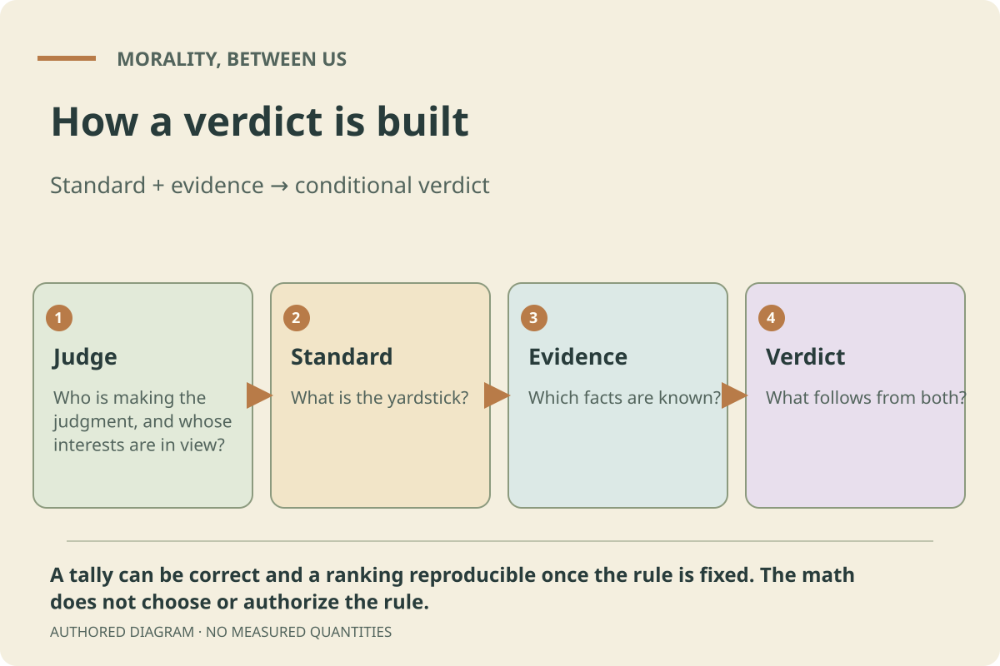
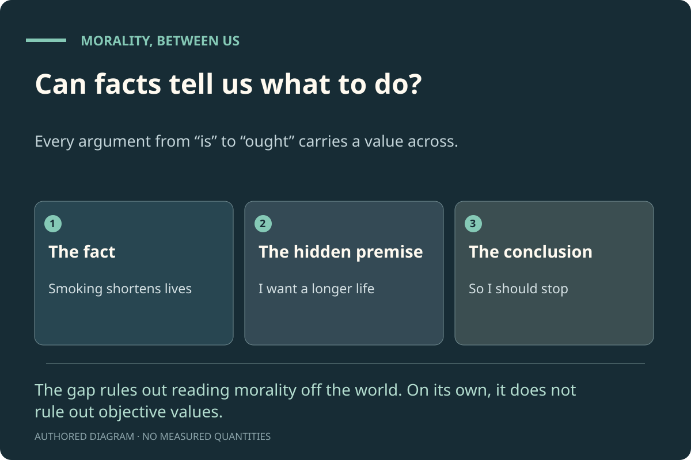

00Do We Need Objective Morality?Morality, Between Us
Your progress0/51Decisions answeredFollow-ups may add questions
Look around · read the exhibits · decide · see what your answers commit you to
An argument in 14 rooms
Morality, between us.
Do we need objective moral facts to settle how we treat each other?
Do we need objective moral facts to settle how we treat each other? This exhibit argues that we don’t. Facts about the world never tell us, on their own, what we should do. The reasons we can give the people affected, plus an honest look at what is influencing our judgment, can do the work we need morality to do. The exhibit does not try to prove that objective moral facts don’t exist. It argues that we never need to rely on them, and it says plainly where that claim is weakest.
47 decisions · 11 jobs on your ledger · three real cases · 42 principles · (asks for your strongest objection at each step)
The 3D view is unavailable on this device. Rooms and In this room give every exhibit, decision and principle. The reading version is below.
The reading version
Morality, between us.
Do we need objective moral facts to settle how we treat each other? This exhibit argues that we don’t. Facts about the world never tell us, on their own, what we should do. The reasons we can give the people affected, plus an honest look at what is influencing our judgment, can do the work we need morality to do. The exhibit does not try to prove that objective moral facts don’t exist. It argues that we never need to rely on them, and it says plainly where that claim is weakest.
The opening asks what “good” and “right” mean. The argument rooms then test jobs that objective moral facts are said to be needed for. You decide each time. At the end you will see your own ledger of jobs and your answers to the opening questions side by side.
When people disagree about how to treat each other, do we need objective moral facts (truths that hold whatever anyone thinks or would agree to) to settle it?
The claim
No. Facts tell us how things are; what we should do also needs a value. Two things supply what we need: the reasons we can give the people a choice affects, reasons they could accept if well informed, free to object and treated as equals; and an honest look at the influences on judgment, separating those that carry information from those that only push.
What it claims, exactly
That in explaining our moral judgments, justifying decisions to one another and protecting people, we never need to rely on objective moral facts. It does not claim to prove they don’t exist. A realist can accept the same reasons and safeguards and say they are correct because they track objective truths. The exhibit’s argument against that extra layer is that, if nothing in our practice depends on it, it does no work.
How it is tested
Objectivists say their facts are needed for particular jobs: explaining our moral feelings, getting from facts to what we should do, making cruelty more than taste, settling disagreement, showing a whole society can be wrong, ruling out terrible agreements, binding people who don’t care, and making sense of our own reasoning. After the opening, each job gets a room, plus three real cases.
Where it is weakest
Ruling out terrible agreements, where the answer rests on a commitment (answer each person, don’t add up small gains against one person’s agony) that an objectivist says must be objectively true. And duties to people who cannot take part, such as future generations and animals.
Words used in this exhibit
Objective moral fact
A moral truth that would hold no matter what anyone thinks, feels or would agree to, even if everyone, reasoning carefully and fairly, concluded otherwise. Philosophers call belief in such facts moral realism; this exhibit calls its supporters objectivists.
Reasons between people
The view that what we owe each other is settled by the reasons we can give the people our choices affect: reasons they could accept if they were well informed, free to object and treated as equals. It is not a vote, and not whatever people happen to agree to today. This exhibit adapts ideas from T. M. Scanlon and Jürgen Habermas; Scanlon himself is a realist about reasons, so the adaptation is the exhibit’s own.
Influences
Anything that changes how someone judges. Some influences carry reasons: new information, someone’s testimony, a real change in what is possible or who is burdened. Others only push: fear stirred by a misleading story, obedience to authority, wanting to fit in, self-interest dressed up as principle. The same event can do both. The useful question is: did this change what is true or possible, or only how we feel about it?
Pressures
Influences that only push: they change judgment without changing the reasons.
Is and ought
A fact says how things are (“smoking shortens lives”). An “ought” says what should be done (“you should stop”). Getting from the first to the second always needs something more: a want, a value, a commitment.
A job
Something objectivists say morality cannot do without objective facts. Jobs differ in kind: explaining why people judge as they do, justifying a decision, protecting people, or making sense of reasoning. For each job you say whether it needs objective facts.
Your ledger
Your answers on each job, collected at the end. If any job truly needs objective facts, the exhibit’s claim fails there.
Principle
A plain sentence you can choose to carry. Your opening answers pre-select some: those principles are your own opening answers, word for word or as their plain opposite. Kept principles appear beside later decisions they bear on.
How to read the labels
Situation
A concrete case to think with.
Definition
An idea used throughout, explained in plain terms.
Evidence
A documented fact or research finding, within its stated limits.
For objectivity
The strongest case that this job needs objective moral facts.
Without objectivity
The best answer that does the job without them.
Still open
What neither side has settled.
Influences
What may have shaped people’s judgment: some carry reasons, some only push.
Reasons
What could, or could not, be justified to the people affected.
Model
An illustrative model, with authored assumptions rather than measurements.
Each choice shows, in grey, what it commits you to. Open it to read what the answer means. A few answers make a step that doesn’t follow, or claim more than the evidence shows; these are marked. Holding a view, whether objectivist or not, is never marked as a mistake.
The twelve opening questions
In the interactive version you can start by saying how far you agree with each statement (strongly disagree, disagree, not sure, agree, strongly agree). Each is tested in one room. When you reach that room, the principle that matches your answer is already selected, and later decisions show whether they fit it or pull against it. At the end you answer the same statements again and see what moved.
Some things are wrong no matter what anyone thinks, feels or would agree to, even after careful and fair discussion.Tested in: Do We Need Objective Morality?
When I feel strongly that something is wrong, I can usually trust that feeling.Tested in: Where Do Moral Feelings Come From?
If we knew every fact about what is happening and what it will cause, we would know what is right to do.Tested in: Can Facts Tell Us What to Do?
If everyone in a society agrees that something is right, then for them it is right.Tested in: Is It Just Opinion, Then?
People’s moral views are shaped by their circumstances more than they realise.Tested in: Why Do Decent People Disagree?
One person can be right about a moral question even when everyone around them disagrees.Tested in: Can a Whole Society Be Wrong?
It can be right to cause one person serious harm if it gives small benefits to very many people.Tested in: Can a Fair Agreement Be Terrible?
Someone who doesn’t care about morality is still bound by it.Tested in: Why Should Someone Who Doesn’t Care Listen?
Adults should be free to take serious risks with their own bodies, even when experts think it unwise.Tested in: Case: Tuskegee and Consent
Wrongdoers should get what they deserve, even if punishing them prevents no future harm.Tested in: Case: What Is Punishment For?
People not yet born matter at least as much as people alive today.Tested in: Case: The Ozone Layer and People Not Yet Born
A rule is only fair if I could explain it to the people it affects and they could reasonably accept it.Tested in: Where Do You Stand?
00 · Do We Need Objective Morality?
A plain question, three ideas, and where you stand now.
This room sets out the question the whole exhibit asks, explains the three ideas it uses, and records where you stand before you begin.
The situation
Two neighbours argue about refugee families who have just arrived and need housing. One says the town owes them help: they fled danger and the town has empty homes. The other says the town’s first duty is to its own residents, some of whom are already waiting for housing. Both are calm, informed and sincere. Is one of them right? And if so, what makes them right?
Idea 1: objective moral facts Definition
Some people believe there are moral truths that hold no matter what anyone thinks, feels or would agree to, in the way 2 + 2 = 4 holds whatever we believe. If so, one neighbour is simply right, even if nobody could ever convince the other. Philosophers call this view moral realism; here we call its supporters objectivists. Many careful thinkers hold it, including Derek Parfit, David Enoch and Michael Huemer. Each argument room begins with their strongest case.
Another view says that what we owe each other is settled by the reasons we can give to the people our choices affect: reasons they could accept if they were well informed, free to object and treated as equals. This is not a vote and not whatever people agree to today. A whole town can fail to give the newcomers reasons they could accept, and then it is wrong, however many residents agree. The view draws on T. M. Scanlon and Jürgen Habermas, though the way it is used here is the exhibit’s own.
Judgments are moved by many things. Some carry reasons: meeting the families, hearing their story, learning how many homes are really free. Others only push: fear stirred up by a misleading news story, obedience to authority, wanting to fit in. In Milgram’s experiment, 26 of 40 people obeyed an instruction to give what they believed were dangerous electric shocks. Influences help explain why the neighbours see the same case differently. Sorting the ones that carry reasons from the ones that only push is half the work of settling the dispute.
Reasons between people, plus an honest look at the influences, can do the work we need morality to do: condemn cruelty, settle disputes, show a whole society can be wrong, and guide a person deciding alone. Objective moral facts may or may not exist. The claim is that we never need to rely on them. A realist can agree with every reason and safeguard in this exhibit and say they are correct because they track objective truths. The exhibit’s reply is that if nothing we do or explain depends on that extra layer, it does no work.
How the test works Definition
Objectivists say their facts are needed for particular jobs. After this opening, each argument room takes one job, gives the strongest case that it needs objective facts, then the best answer without them. You decide. Your decisions build a ledger of jobs. If any job truly needs objective facts, the claim fails there, and the exhibit will say so. Your opening answers also pre-select principles, so you can see where your later decisions follow from them and where they cannot hold alongside them.
Decide
Before you begin: what do you think now about objective moral facts?
There is no right answer. Your choice is recorded so you can compare it with where you end up.
They exist, and we need them to settle how we treat each other.Each room will ask whether its job really needs them.
This is the objectivist position. The exhibit takes it seriously: every room starts with its strongest case. If your later answers show some job can’t be done without objective facts, that counts against the exhibit’s claim.
A good place to start. Your ledger at the end may tell you more than this question can.
You see teenagers set fire to a cat for fun. You immediately think: that’s wrong. What best explains why you think so?
This is the philosopher Gilbert Harman’s example. Pick the explanation that seems best; the next rooms test each one.
I’m seeing a moral fact: the act really is wrong, whatever anyone thinks.The room on moral feelings asks whether that fact is needed to explain your reaction.
This is how many objectivists describe it, and Sturgeon defends it. The next room asks whether the moral fact adds anything to the explanation beyond the cruelty itself.
The cat suffers for nothing, and no one could give a reason for that which the rest of us could accept.Your explanation uses no objective fact. Later rooms test whether it is strong enough.
This is the reasons-between-people answer. Notice that it explains why the act is wrong, not just why you react.
I was raised, and probably built, to react to cruelty this way.This explains the reaction. The rooms on moral feelings and the is–ought gap ask whether that can also show the reaction is right.
This is the psychological explanation Harman favours. It leaves open whether the reaction is correct.
Some mix of these.You keep several explanations in play.
Reasonable. As the rooms go on, notice which part of the mix does the work.
Back to the two neighbours. If neither can convince the other, what then?
This question links to the room on disagreement.
One of them is still right, even if no one can ever show it.You think the answer exists independently of any argument. The room on disagreement asks how anyone could act on it.
This is a natural objectivist view: truth doesn’t depend on proof. The practical question is how the town should act while it can’t tell who is right.
Whoever has reasons the other side could accept, if they were fair and informed, is right.You use the reasons-between-people test.
This makes the dispute answerable: ask what each side could offer the other. The room on disagreement asks what happens if both sides still have reasonable answers.
In this dispute, there may be no single right answer.You allow that this case may have no single right answer. That is a claim about this case, not about every case.
Many careful thinkers accept that some disputes have more than one defensible answer (David Wong calls this pluralism). It doesn’t follow that every dispute is like this. The cat case, for instance, may still have a clear answer.
First I’d want to know what is influencing each of them, such as fear, loyalty, scarcity or what they have seen.You start with the third idea. The room on disagreement develops it.
A strong first move. Knowing the influences doesn’t settle who is right, but it shows where mistakes are likely and where real information came in.
Opening statement tested here: “Some things are wrong no matter what anyone thinks, feels or would agree to, even after careful and fair discussion.” Agreeing pre-selects one principle below; disagreeing pre-selects the other.
Wrong whatever we’d agree
“Some things are wrong no matter what anyone thinks, feels or would agree to, even after careful and fair discussion.”
This is your own opening answer, word for word. This is the objectivist claim. Saying that a job doesn’t need objective facts never pulls against it: facts can exist without being needed. Keeping it means it is shown beside later decisions it bears on, with a note when an answer follows from it or cannot hold alongside it.
Pre-selected if you agree with the opening statement above.
“Whether something is wrong always depends, in some way, on what people think, feel or would agree to.”
This is your own opening answer, put as the plain opposite of the statement you disagreed with. It covers relativism and the reasons-between-people view. Error theorists, who think nothing is really wrong at all, may reject both statements. Keeping it means it is shown beside later decisions it bears on, with a note when an answer follows from it or cannot hold alongside it.
Pre-selected if you disagree with the opening statement above.
“If a job really does need objective facts, I’ll say so, whichever side I started on.”
A principle of honesty for the whole exhibit. Keeping it means it is shown beside later decisions it bears on, with a note when an answer follows from it or cannot hold alongside it.
Where this room ends up
The question is not whether morality matters, or whether some answers are better than others. Both sides agree on that. The question is what makes an answer better: a fact beyond everyone, or reasons the people affected could accept.
Do we need objective morality?. The question every room tests, and the three ideas it uses. The claim: reasons, plus an honest look at influences, do every job; we never need to rely on objective facts. Authored diagram; it shows no measured quantities or simulated outcomes.
01 · What Even Is Right and Wrong?
Even if there is a moral law, is this act right or wrong?
Before the rooms that ask whether we need objective moral facts, this room does the opposite: it hands the objectivist everything. Suppose there really is a moral rulebook, true for everyone, everywhere, whatever anyone thinks. Would that tell us whether a particular act was right or wrong? Try it and see how much is still left to decide.
The situation
Two rules are granted as universal truths for this whole room. Rule 1: lying is wrong. Rule 2: letting an innocent person come to serious harm, when you could easily prevent it, is wrong. Nobody here argues with them. The only question is what they tell us about real cases: a surprise party, a man at the door, a stranger under a gate, two careless drivers.
Grant it: a rulebook that is simply true Situation
Imagine the moral rulebook exists and nobody disputes it. This room does not question that. It asks something smaller and more practical: once you have a true rule, can you read off whether this act, by this person, was right or wrong?
Granted
Two universal moral facts: lying is wrong; letting an innocent person come to serious harm, when you could easily prevent it, is wrong.
Tested
Whether those facts, on their own, give a verdict on a particular act.
Not claimed
That there are no moral facts. A rule can be true and still hard to apply.
What counts as a lie? Situation
Rule 1 says lying is wrong. Which of these is a lie? A friend planning your surprise party says “Nothing’s happening on Saturday.” A poker player bluffs. A novelist describes events that never happened. You tell a shop assistant “I’m fine” on a bad day. A parent says the goldfish “went to live in a big lake.” The rule doesn’t say. Kant defined a lie as any intentionally false statement to another person. His critic Benjamin Constant said the duty to tell the truth is owed only to someone who has a right to the truth. The two definitions give different verdicts on the same five cases.
Strict (Kant)
Any deliberately false statement is a lie. The party, the bluff, “I’m fine” and the goldfish all count, and all are wrong.
Deception you didn’t agree to
Only trying to make someone believe something false that they haven’t accepted. The bluff and the novel drop out; the party probably stays in.
A right to the truth (Constant)
Only falsehoods told to someone entitled to the truth. The goldfish and the party may drop out.
Who decided?
The rule said lying is wrong. Deciding what lying is was done by us.
A man with a knife comes to your door and asks whether your friend is hiding inside. She is. Rule 1 says don’t lie. Rule 2 says don’t let an innocent person come to serious harm when you could easily prevent it. Both are granted as true, and here they point in opposite directions. This exact case was argued over in 1797. Constant used it to show that a duty to tell the truth cannot be unconditional. Kant replied that truthfulness is “a sacred unconditional command of reason”. In 1930 W. D. Ross suggested a third answer: duties like these are real but can be outweighed, and deciding which weighs more in a given case “rests with perception”.
Rule 1
Say she isn’t here, and you lie.
Rule 2
Tell the truth, and you may be handing her over.
What the rulebook lacks
A ranking. Even if both rules are universal facts, neither says how much it weighs against the other in this doorway, tonight.
Two objectivists, two answers
Kant: never lie. Ross: weigh the duties case by case, with a judgment he called “highly fallible, but … the only guide we have”.
Now make the rulebook even better: suppose it says exactly how to rank two duties. “Break a promise to save someone in real danger, if you can help safely.” You promised to return a neighbour’s pry bar by dark. On the way, you find a stranger pinned under a fallen gate, calling for help. Is she in real danger? Can the bar lift the gate without crushing her? You don’t know yet. The rule is perfect; your picture of what is happening is not. Many real arguments about whether an act was wrong are arguments of this kind.
The rule
Complete: it says what to do in every version of the case.
The facts
Missing: whether the danger is real, and whether the bar can help safely.
The verdict
Waits on the facts, and people who saw different things may honestly disagree about them.
Careful
Not knowing the answer is not the same as there being no answer.
The act, the person, or how it turned out? Situation
Two drivers leave the same party, equally tired and equally careless, and take the same corner too fast. A child steps into the road in front of one of them. Nothing happens to the other. Did the first driver do something worse? Most people’s reactions say yes. Most people’s principles say they did the same thing. Thomas Nagel called this moral luck: we judge people by outcomes they did not control. Kant raised a version of it at the door: if you lie, and your friend has slipped out unseen and the man meets her in the street, Kant said you could be blamed for her death.
The act
Was it the right thing to do, given what they knew?
The person
Did it show carelessness, cruelty, courage, kindness?
The outcome
Did it turn out well or badly?
One word, three questions
When people argue about whether something was “wrong”, they are often answering different ones of these.
An old story from the Huainanzi, a Chinese book from the second century BCE. A man’s horse runs off across the border. Bad luck, say the neighbours. His father asks: why shouldn’t this turn out to be a blessing? The horse comes back leading a fine horse. Good luck? The son rides it, falls and breaks his thigh. Bad luck? War comes, most young men of the frontier are killed, and the lamed son is spared. Whether something is good or bad depends on when you stop counting. Decisions are the same: one can look wise after a month and terrible after ten years, and wise again after twenty.
Judged at the time
By what could reasonably be foreseen.
Judged later
By what actually followed.
Never finished
Consequences keep running, so any verdict on outcomes is a verdict as of a date.
Not hopeless
We can still judge whether a decision was reasonable. That is a different question from how it turned out.
Rules use words like “serious”, “easily” and “good enough reason”. A white lie about a friend’s haircut, a padded CV and a false alibi in court are all lies, but few people think they are equally wrong. Rule 2 says you must prevent serious harm when you easily can. Is a broken arm serious? A missed bus? Is giving blood easy? Giving a kidney? Somewhere between the clear cases the verdict flips, and the rule doesn’t say where. One grain of sand is not a heap and a million grains are; no single grain makes the difference, yet there is a difference.
Clear cases
Some verdicts are easy on any reading: lying in court to send an innocent person to prison is wrong.
The hard middle
Most real arguments happen between the clear cases.
Who draws the line
Laws, customs and conversations draw lines. The rule itself does not.
Not arbitrary
A line can still be defended or challenged with reasons.
So, even with a moral law, who decides? Still open
Grant a universal moral law. To get from it to “that act was wrong”, someone still has to name the act, find out the facts, weigh the rules that apply, decide whether they are judging the act, the person or the outcome, choose when to stop counting, and draw the line. Constant put it in 1797: when a true principle seems not to fit, “it is because we do not know the middle principle”. Each of those steps is a judgment people make, and honest, well-informed people make them differently. An objectivist can reply that there are objective facts about these steps too: a right description, right weights, a right line. That is coherent, and Ross believed something like it. But nobody is handed those facts. In practice we still decide by giving each other reasons. That is the thought the rest of the exhibit tests: if our reasons do the work either way, what work is left for the objective facts?
Six steps
Name it · find out · weigh · act, person or outcome · when to stop counting · where the line falls.
Not shown
That there are no moral facts. Hard to apply is not the same as false.
Shown
A verdict on a particular act needs judgment that the moral facts themselves don’t supply.
Next
The rest of the exhibit asks whether, once we are doing that judging anyway, we need the objective facts at all.
Grant that lying is wrong. Your friend, planning your surprise party, tells you: “Nothing’s happening on Saturday.” Did they do something wrong?
The rule is granted as a universal truth. The question is what it says about this act.
Yes. It was a lie, so it was wrong, even if only slightly.You apply the rule to every deliberately false statement. Surprise parties, poker bluffs and kind fibs all become wrongs.
Consistent, and close to Kant’s view. Its cost is that a great deal of ordinary kindness becomes wrongdoing; many people who accept that lying is wrong don’t accept that.
No. That isn’t really lying: I’d want to be fooled about a surprise.You decide what counts as a lie by what the person would agree to. The rule didn’t say that; you added it.
A reasonable reading: a lie as deception the other person hasn’t accepted. Notice that the work was done by your definition, not by the rule.
It was a lie, but a harmless one, outweighed by the kindness behind it.You treat the rule as a real duty that can be outweighed. Now you need a way to weigh.
This is roughly Ross’s view of duties. It keeps the rule true and makes room for exceptions, at the price of needing judgment about how much each consideration weighs.
The moral fact itself settles it; we just have to find out what it says.You expect the true rule to come with its own definitions and exceptions.
Possible: an objectivist can say the full moral truth includes exactly what counts as lying. But nobody has been handed that version, so for now you still have to decide, as everyone else does.
A man with a knife asks whether your friend is in the house. She is. Both rules are granted: lying is wrong, and letting an innocent person come to serious harm, when you could easily prevent it, is wrong. What should you do?
The case Kant and Constant argued over in 1797. Both rules are true for this exercise; here they point opposite ways.
Lie. Protecting her life matters more than the truth here.You rank rule 2 above rule 1 in this case. The rules didn’t supply the ranking; you did.
Most people answer this way, as Constant did. It means the duty not to lie is real but can be outweighed.
Tell the truth. Lying is wrong whatever happens next.You treat rule 1 as unconditional, even here.
This is how Kant’s 1797 essay is usually read: truthfulness is “a sacred unconditional command of reason”. Some scholars read him more narrowly. Few people accept the strict answer, and the fact that it is a live dispute between objectivists is the point.
Avoid both: say nothing, shut the door, or say something true but misleading.You look for an act that breaks neither rule as you understand them.
Often the wisest move in real life. Notice it depends on what counts as a lie: if a true but misleading answer counts, the dilemma comes back.
There must be an objective ranking of the two rules; whatever it is, that’s the answer.You expect the moral facts to include weights for every collision.
Coherent. Ross thought there is a right answer about which duty weighs more, but that finding it “rests with perception”, a judgment he called highly fallible. Either way, standing at the door, you have to decide.
Since the two rules clash here, one of them can’t really be a moral fact.You take a clash in one case as proof that a rule is false.
This step doesn’t follow. It needs a further premise: that true moral rules can never pull in opposite directions. Many objectivists, Ross among them, deny that. A clash shows that true rules need weighing, not that one of them is false.
You promised to return a neighbour’s pry bar by dark. On the way you find a stranger pinned under a fallen gate. The rulebook says exactly: break a promise to save someone in real danger, if you can help safely. You don’t yet know whether she is in real danger, or whether the bar can lift the gate safely. What follows?
An invented case. The rule is complete for this exercise; only the facts are uncertain.
Find out fast: how badly is she trapped, and can the bar lift the gate safely?You go after the missing facts the rule depends on.
The rule is settled; what isn’t settled is what is happening. That is a different kind of uncertainty, and the usual one in real life.
Help at once: she might be in danger, so she is.You treat a possibility as proof.
This step doesn’t follow. That she might be in danger isn’t evidence that she is, or that the bar is safe to use. (In practice, checking quickly is usually the answer.)
Keep walking: I don’t know she’s in danger, so the promise wins.You treat not knowing as knowing the answer is no.
This step doesn’t follow. Not knowing whether something is true is different from knowing it is false.
Two drivers leave the same party, equally tired, and take the same corner too fast. A child steps out in front of one of them and is hurt. Nothing happens to the other. Who did something worse?
An invented example of what Thomas Nagel called moral luck.
The first. What you do includes what happens because of it.You judge acts partly by their outcomes, even outcomes the driver didn’t control.
This matches most people’s reactions, and many legal systems treat causing harm as more serious than risking it. Its cost: two people can be equally careless and be judged very differently by luck.
Neither: they did exactly the same thing. One was unlucky.You judge the act by what the driver controlled.
This fits the principle Nagel describes: people shouldn’t be judged for what isn’t their fault. Its cost: it seems to say the first driver has nothing more to answer for, which few people believe.
Same act, same carelessness, very different outcome. Those need separate verdicts.You separate the act, the person and the outcome.
This dissolves part of the puzzle: “equally careless” and “one caused far more harm” can both be true. It leaves open what the first driver owes now, which is a further question.
A doctor prescribes a new drug, the best treatment anyone knew of. It works well for five years; then a rare long-term side effect appears. Was prescribing it the right decision?
An invented case about when to judge.
Yes. It was the right decision given what anyone could know.You judge the decision by what was reasonably foreseeable.
A widely used standard, in medicine and in law. It separates a good decision from a lucky or unlucky outcome.
It turned out badly in the end, so it was the wrong decision.You judge decisions by everything that followed.
A coherent standard, but it means no decision can be judged until its effects stop, and they never fully do. It also makes the same decision right at year four and wrong at year six.
Back to the start. If a moral rule is true for everyone, does that settle whether a particular act was right or wrong?
Your answer here carries into the next rooms, which ask whether we need objective moral facts at all.
Yes, once we know enough of the facts.You put the difficulty down to missing facts alone.
Facts are part of it, as the pry bar shows. But the party, the door, the drivers and the line were hard even with the facts known. If you think more facts would settle those too, ask yourself which facts.
It narrows the argument, but people still have to name, weigh and draw lines.You see the rule as a starting point that still needs human judgment to apply.
This is where the room ends up. It is compatible with believing in objective moral facts, as Ross did.
No, and that makes me wonder what work the universal facts are doing.You question whether objective facts add anything to the judging we do anyway.
That is the question the rest of the exhibit tests, job by job. It is a question, not yet a conclusion: an objectivist can say the facts are what our judging aims at.
No, so there are no universal moral facts.You move from “hard to apply” to “not real”.
This step doesn’t follow. A rule can be true and still hard to apply, as the pry bar shows: the difficulty was in our knowledge, not in the rule. The room granted the facts and showed only that they don’t apply themselves.
Principles in this room
Name it carefully
“Before I call something a lie, a theft or a betrayal, I check that the name fits what actually happened.”
Most rules apply to acts under a name; choosing the name is already a judgment. Keeping it means it is shown beside later decisions it bears on, with a note when an answer follows from it or cannot hold alongside it.
“I keep apart whether an act was right, whether the person acted well, and how it turned out.”
Three questions that one word, “wrong”, often blurs together. Keeping it means it is shown beside later decisions it bears on, with a note when an answer follows from it or cannot hold alongside it.
“I separate the rule I believe from how sure I am about what happened.”
Uncertainty about what happened is not the same as uncertainty about what would be right if the facts were known. Keeping it means it is shown beside later decisions it bears on, with a note when an answer follows from it or cannot hold alongside it.
A universal moral rule narrows the argument but does not end it. Before you stamp an act right or wrong, ask: what exactly happened, and what should it be called? Which rules does it touch, and do they pull apart? Are you judging the act, the person, or how it turned out? As of when? Where is the line, and who drew it? None of this shows there are no moral facts. It shows that even with them, people still have to do the judging, and give each other reasons for it.

A true rule meets a real case. Grant the rule. A verdict still needs people. Even a universal moral rule has to be named, weighed and applied by people before it gives a verdict. Authored diagram; it shows no measured quantities or simulated outcomes.
02 · Where Do Moral Feelings Come From?
If we can explain the feeling, do we still need the fact?
Back at the hub you chose what you think explains your reaction to cruelty. This room asks whether that explanation needs objective moral facts. It starts with evidence about monkeys and babies, because if moral feelings are partly built in by evolution, that matters for both sides.
The situation
You feel, instantly and strongly, that hurting a cat for fun is wrong. Where does that feeling come from? There are two very different answers. One: you are noticing a moral fact, the way you notice that the cat is in pain. Two: evolution, upbringing and the cat’s suffering cause the feeling, and no further fact is involved.
The monkey and the cucumber Evidence
In a famous 2003 experiment, capuchin monkeys traded tokens for food. Some refused a piece of cucumber after watching a partner get a grape for the same work. Many people read this as an inborn sense of fairness. The later evidence is mixed. A 2024 analysis pooling 23 studies across 18 species found no clear overall effect in this kind of test, and found that refusals rose whenever better food was simply in view, which suggests disappointment rather than unfairness. A 2025 bonobo study and a 2026 chimpanzee study did find responses to unequal treatment in some conditions; a 2026 study of four primate species found none when unfairness happened only some of the time.
A large 2025 replication across many labs did not find the well-known result that babies of 5 to 10 months prefer “helpers” to “hinderers”. A 2026 study found that babies of 14 to 15 months expect people who help each other to have caring relationships. Across 60 societies, an anthropology study found that behaviours which help cooperation (helping family, reciprocating, sharing, keeping promises, being fair) are everywhere judged good. Plain upshot: some building blocks of moral life are probably old and widely shared. How much is built in, and how much is learned, is unsettled.
The case for needing the fact: Sturgeon and Huemer For objectivity
Nicholas Sturgeon replied to Harman that we often explain things by moral facts, and the explanations seem good. “Hitler did what he did because he was depraved.” “Opposition to slavery grew because slavery was so bad.” If those explanations work, moral facts earn a place, just as unseen particles do in physics. Michael Huemer adds a historical argument: over centuries, moral views have moved in one broad direction, against slavery, torture and cruelty to outsiders. People slowly discovering objective truths would explain that trend.
The answer without it: Harman and Street Without objectivity
Gilbert Harman argued that we never need moral facts to explain moral reactions. The teenagers’ cruelty, plus your psychology and upbringing, explain your reaction completely. Harman’s side replies to Sturgeon’s examples by restating them without the moral fact: Hitler acted from hatred, paranoia and the pressures of his movement. Whether the restatement explains as well, or merely redescribes, is the disputed point. Sharon Street adds a sharper point. Evolution shaped our moral feelings because they helped our ancestors survive and cooperate, not because they matched facts that hold whatever anyone thinks. If such facts exist, our feelings would match them only by luck. Huemer’s trend has another possible explanation too: more people gained the power to object (see “Can a Whole Society Be Wrong?”).
2025: bonobos responded to unequal rewards even when a machine, not a person, handed out the food, which is harder to explain as disappointment with the experimenter.
It shows monkeys have the same sense of justice that we do.You read a full human concept into one behaviour.
This step doesn’t follow. This step doesn’t follow. Throwing food away can come from disappointment at seeing better food, and the pooled evidence for an unfairness effect is weak. A reaction like this might be a building block of fairness, but it doesn’t show a sense of justice.
It tells us nothing at all about human morality.You set animal evidence aside entirely.
That may go too far the other way. Even if this test is weak, the question of whether our moral feelings have an evolutionary history stays open, and the infant and cross-cultural evidence bears on it.
Ledger · Explaining where moral feelings come from
Do we need objective moral facts to explain why people have moral feelings at all?
This is the first job on your ledger. Harman says no: psychology, evolution and upbringing are enough. Sturgeon says moral facts belong in some good explanations, just as particles do in physics.
Yes. Some reactions are best explained by the act really being wrong.Ledger: this job needs objective facts. You’ll need to say what the fact adds beyond the cruelty itself.
You side with Sturgeon. The challenge you take on: in each example, say what the moral fact explains that the non-moral facts (the cruelty, the suffering, the people’s psychology) do not.
No. The cruelty, our psychology and our upbringing explain the reaction fully.Ledger: this job is covered without objective facts. It does not yet show the reaction is correct.
You side with Harman. Notice what you have not claimed: that the reaction is mistaken. Explaining where a feeling comes from leaves open whether it is a good guide. The next room takes that up.
Psychology explains most reactions, but the long trend against slavery and cruelty needs more.Ledger: partly. “Can a Whole Society Be Wrong?” looks at Huemer’s trend directly.
You take Huemer’s progress argument seriously. The room on whole societies offers a rival explanation of that trend (the excluded gaining a voice). You can compare them there.
Fair enough. The next question, about evolution, may help: it asks what follows if our feelings were shaped for survival.
Suppose evolution shaped your feeling that cruelty is wrong. Does that make the feeling untrustworthy?
Street’s argument is not “evolved, therefore false”. It is that evolution had no reason to make our feelings match facts that hold whatever we think, so a match would be luck.
Yes. If evolution shaped it, it is just an illusion.You treat where a feeling came from as proof that it’s false.
This step doesn’t follow. This step doesn’t follow. Evolution also shaped our sense of depth and of number, and those are not illusions. Where a belief comes from doesn’t settle whether it is true. Street’s real argument is narrower, and it is aimed at objectivism specifically.
No. If evolution built it in, it must be right.You treat being evolved as proof of being right.
This step doesn’t follow. This step doesn’t follow either. Evolution also built in suspicion of strangers and favouritism towards our own group. Being evolved doesn’t make a reaction right.
It is a fair starting point for reflection, but it would be a lucky accident if it matched facts that hold whatever anyone thinks.You accept Street’s dilemma, which counts against objectivism specifically.
This is close to Street’s argument. She doesn’t say your feeling is wrong: on her view, what we have reason to value is what survives careful scrutiny by our other values. (The exhibit goes further and links that scrutiny to what can be justified to others; that link is the exhibit’s, not Street’s.) If you also said earlier that your reaction reveals an objective fact, the tool will ask how the two fit.
Evolution favoured noticing real harms and benefits, so our feelings can track moral facts after all.You give the objectivist reply. It needs moral facts to line up with harms and benefits.
This is the main objectivist answer to Street (Railton’s naturalism is one version). Notice that harms and benefits are also exactly what the reasons-between-people view uses. The question becomes whether the extra fact does any work.
Opening statement tested here: “When I feel strongly that something is wrong, I can usually trust that feeling.” Agreeing pre-selects one principle below; disagreeing pre-selects the other.
Trust strong reactions
“When I feel strongly that something is wrong, I can usually trust that feeling.”
This is your own opening answer, word for word. Strong reactions often track real harms. Keeping it means it is shown beside later decisions it bears on, with a note when an answer follows from it or cannot hold alongside it.
Pre-selected if you agree with the opening statement above.
“When I feel strongly that something is wrong, I can’t usually trust that feeling by itself.”
This is your own opening answer, put as the plain opposite of the statement you disagreed with. Feelings can carry information, and also habit and bias. Keeping it means it is shown beside later decisions it bears on, with a note when an answer follows from it or cannot hold alongside it.
Pre-selected if you disagree with the opening statement above.
“I won’t claim more from a study than it actually showed.”
A rule for every evidence card in the exhibit. Keeping it means it is shown beside later decisions it bears on, with a note when an answer follows from it or cannot hold alongside it.
Evolution, upbringing and the situation seem able to explain why we have moral feelings without any extra moral fact. Sturgeon’s reply is serious, but his explanations can usually be restated without one. Explaining a feeling is not the same as showing it is correct, though. The next room asks whether any facts at all can show that.
Where do moral feelings come from?. Explaining a feeling is not the same as showing it is right. Harman: the feeling is explained without the fact. Sturgeon: sometimes the fact explains best. Authored diagram; it shows no measured quantities or simulated outcomes.
03 · Can Facts Tell Us What to Do?
From how things are to how they should be.
The last room found that we can explain where moral feelings come from. But explaining a feeling doesn’t show it is right. This room asks the oldest version of that question: can any amount of facts, on their own, tell us what we ought to do?
The situation
Your doctor says: “If you keep smoking, there’s about a one-in-two chance it will shorten your life.” Almost everyone hears that and thinks: so you should stop. But look closely. The doctor told you a fact about the future. Where did the “so you should stop” come from?
Hume’s surprise Definition
In 1740 the philosopher David Hume noticed something odd about moral arguments. Writers would describe how the world is (God exists, people behave like this) and then, without warning, start saying how things ought to be. Hume said the “ought” expresses a new kind of relation, and that someone should explain how it can follow from premises that are about something entirely different. The point is about logic. In a valid argument, the conclusion can’t say anything substantial that the premises don’t already contain. So if every premise says only how things are, no real conclusion about what you should do can come out. (Logicians have found trick exceptions, such as “tea is drunk in England, so either tea is drunk in England or you ought to stop”, but none of them tells anyone what to do.)
Most everyday arguments from facts to “should” leave a value unstated. Find it and the argument becomes honest, and sometimes falls apart. “It’s natural, so it’s fine”: hidden premise, whatever is natural is fine (but so are disease and earthquakes). “Everyone does it”: whatever most people do is right (whole societies once accepted slavery). “It’s legal”: the law is always right. “We evolved to favour our own family, so we should”: whatever evolution favoured is right (it also favoured aggression). “The data shows this policy cuts crime, so we should adopt it”: cutting crime is worth these particular costs to these particular people. “The algorithm predicts he’ll reoffend, so refuse him bail”: a prediction is enough to take someone’s liberty. None of these hidden premises is obviously true. Some are obviously false.
Some philosophers think the gap can be crossed. John Searle: Jones says to Smith, “I promise to pay you five dollars”; so Jones has promised; so he has taken on an obligation; so he ought to pay. Every step, Searle says, follows from facts about what Jones did. Philippa Foot: goodness in living things is a matter of fact. A good root reaches water; a good wolf hunts with its pack. Perhaps a good human life can be described the same way, from facts about what humans need to flourish. Hilary Putnam: words like “cruel”, “rude” and “brave” describe and judge at the same time, so the wall between facts and values is not as solid as Hume suggested. And there is a familiar, less controversial crossing: if you want X, and Y is the only way to get X, then you have a reason to do Y, or else to give up wanting X. Even this has limits: R. Jay Wallace argues there is no genuine requirement to take the means to ends you merely happen to desire.
Where each bridge needs a hidden plank Without objectivity
Each bridge, looked at closely, carries a value across with it. Searle’s promise creates an obligation inside the practice of promising; whether we should keep promises at all is a further question. R. M. Hare made this reply. Foot’s facts about flourishing say what is good for a human; whether I should care about your flourishing as well as mine, and how to weigh them, is still open. “Natural” behaviour in wolves and lions also includes killing rivals’ young. Putnam’s “cruel” carries its value inside it: calling an act cruel already commits you to counting it as bad, and someone who rejects that value can describe the same act without the word. (Whether description and value can really be pulled apart like this is still argued over.) The “if you want X” crossing needs the wanting. In every case, something about what matters had to be brought along.
What the gap shows, and what it doesn’t Still open
A popular summary: no description of reality, however detailed, contains instructions for what we should do; deciding that needs a mind bringing values to the table. That much is right. Does it follow that morality cannot be objective? Not by itself, and the reason matters. Objectivists such as G. E. Moore, Derek Parfit and David Enoch accept the gap completely. They say moral facts are a different kind of fact, about what is worth caring about, which is exactly why no description of the world contains them. Other objectivists, such as Peter Railton, are naturalists: they argue that moral facts are natural facts (for example, facts about what is good for people under well-informed conditions). They don’t claim to derive an “ought” from neutral premises; they defend the identification with a substantive theory, which has to be judged on its merits. And “needs a mind” can mean two things. It can mean a mind must notice and apply a value, which is also true of arithmetic, whose truths don’t depend on us. Or it can mean the value’s truth depends on minds, which needs a further argument. So the gap rules out deriving morality from neutral descriptions alone. It leaves objectivists two routes: moral facts of a special, non-natural kind, or natural facts identified as moral by an argued theory. Both need defending, and the rest of this exhibit asks whether we ever need to rely on either.
The doctor says smoking will probably shorten your life. You conclude: “So I should stop.” What did you add to get there?
Hume’s point in one example. The doctor gave you a fact about what will happen; the “should” came from somewhere else.
That I want to live longer.Your “should” depends on what you want: if you want X, do what gets X.
This is the least controversial crossing: a fact plus a goal you keep gives a practical “should”. Notice it is only as strong as the goal, and you can always give the goal up instead; some philosophers deny it is a real requirement at all. On this reading, someone who would rather smoke and die at 70 has the same fact and a different “should”.
That a longer, healthier life is worth having, for anyone.You added a value: a claim about what is worth having.
You added a premise about what is worth having. Most people share it. Whether it is an objective fact or a value people bring and can defend to each other is the question the rest of the exhibit asks.
Nothing. The fact itself tells me to stop.You treat the fact alone as giving the “should”.
This step doesn’t follow. This step doesn’t follow. The fact says what will probably happen. Picture someone who knows it just as well and concludes “so I’ll enjoy the years I have”. Whatever you think of that choice, there is no mistake in their logic: the fact alone doesn’t rule it out. So something besides the fact is doing the work in your conclusion, even if it is so obvious you didn’t notice adding it.
I’m not sure what I added.Keep the question open; the next exhibit helps.
The exhibit “Spot the hidden premise” has six everyday examples.
“Lions kill the cubs of rival males. It’s natural. So it isn’t wrong when people do similar things.” What is wrong with this argument?
A real form of argument people use, from nature to what is acceptable.
It assumes whatever is natural is acceptable, and plenty of things that come naturally to people, like revenge or grabbing more than your share, are not.You find the hidden premise and reject it.
That is the appeal to nature. Once the hidden premise is stated, it is easy to find counterexamples among natural human behaviour.
Humans are different from lions, so it doesn’t apply to us.You reject the step from lions to humans, but not the step from “natural” to “fine”.
True, but it leaves the hidden premise standing. Would you say the killing is fine for lions because it is natural? “Natural” doesn’t settle that for anyone. The point is the missing “so”, not the difference between species.
Nothing. If something is natural, it can’t be wrong.You accept the hidden premise.
Given that premise, the conclusion does follow; the argument is valid. The premise is the problem. Revenge, favouring your own group and taking more than your share all come naturally to people; few would accept that they therefore can’t be wrong. Try to name a natural human behaviour you think is wrong: if you can, the premise fails.
Nature can show what is good for a kind of creature, but this argument picks the wrong facts.You take Philippa Foot’s more careful route.
This is Foot’s view: facts about how members of a species flourish can tell us what is good for them. It is much stronger than the lion argument. It still leaves a question: why should I care about others’ flourishing as well as my own, and how should I weigh them?
Jones says to Smith: “I promise to pay you five dollars.” Does it follow, from that fact alone, that Jones ought to pay?
John Searle’s famous attempt to get from “is” to “ought” in a few steps.
Yes. Promising simply is taking on an obligation, and that is a fact about what he did.You side with Searle: facts about an institution can give an “ought”.
This is Searle’s argument. Critics reply that the “ought” only follows once you accept the rules of promising, and accepting them is already a value.
Only inside the practice of promising. Whether we should keep promises at all is a further question.You find the hidden premise: that the practice of promising should be followed.
This is R. M. Hare’s reply to Searle. Inside the practice, the “ought” follows. Whether the practice is binding is the value that had to be brought in.
Yes, but because Smith is now relying on him, and breaking it would wrong Smith.You ground the “ought” in Smith’s claim on Jones, a reason between them.
This is how the reasons-between-people view explains promising: Jones led Smith to rely on him, and Smith could reasonably reject a principle that lets people break such promises. The obligation comes from what Smith is owed, which is a value, not from the words alone.
Philosophers have argued about this example for sixty years.
Someone says: “Facts don’t contain instructions, so deciding what should happen needs a human mind bringing values. Therefore morality can’t be objective.” Does the conclusion follow?
This is a popular way of putting Hume’s point. The question is whether the last step follows.
Yes. If values need a mind, they depend on minds, so they can’t be objective.You move from “needs a mind to apply” to “depends on minds for its truth”.
This step doesn’t follow. This step doesn’t follow as stated. “Needs a mind” can mean that a mind must notice and apply the value. That is also true of arithmetic: someone has to do the sums, yet 2 + 2 = 4 doesn’t depend on anyone. Or it can mean the value’s truth depends on minds, which needs a further argument. Arguments for that exist (J. L. Mackie’s is one). This exhibit makes a weaker claim: that we never need to rely on values whose truth is independent of minds.
Not yet. It shows values can’t be read off the facts; whether they depend on minds needs more argument.You accept the gap and keep the further question open.
This is the careful reading. The gap rules out deriving morality from neutral descriptions alone. Objectivists still have routes: non-natural moral facts, or natural facts identified as moral by an argued theory (Railton). The rest of the exhibit asks whether we ever need either.
No. Maths needs minds to do it, but its truths are still objective. Values could be like that.You take the objectivist reply: moral truths could be like mathematical ones.
This is the objectivist answer (Moore, Parfit, Enoch). It accepts the gap and says moral facts are a different kind of fact. The challenge it faces is the next rooms’ question: if such facts are invisible in every description, how do we know them, and what do we need them for?
It depends on whether values are more like maths or more like tastes.You frame the question the rest of the exhibit tries to answer.
Exactly the question. The next room starts with tastes.
Ledger · Getting from facts to what we should do
To get from facts about the world to what we should do, do we need objective moral facts?
Everyone agrees the facts alone aren’t enough: something about what matters has to be added. The question is what that something is.
Yes. The missing premise must be an objective moral fact, or the “should” has no authority.Ledger: needed. Moral facts would then be a special kind of fact, absent from every description.
This is Moore’s position. The later rooms ask what work those special facts do that nothing else can.
That’s a legitimate answer. It will show on your ledger as an open question.
Principles in this room
Opening statement tested here: “If we knew every fact about what is happening and what it will cause, we would know what is right to do.” Agreeing pre-selects one principle below; disagreeing pre-selects the other.
Facts settle it
“If we knew every fact about what is happening and what it will cause, we would know what is right to do.”
This is your own opening answer, word for word. On this view, what we ought to do can be read off how the world is. (Objectivists who think moral facts are a separate kind of fact would disagree with the statement.) Keeping it means it is shown beside later decisions it bears on, with a note when an answer follows from it or cannot hold alongside it.
Pre-selected if you agree with the opening statement above.
“Knowing every fact about what is happening and what it will cause would not, by itself, tell us what is right to do.”
This is your own opening answer, put as the plain opposite of the statement you disagreed with. This is Hume’s point about “is” and “ought”. Keeping it means it is shown beside later decisions it bears on, with a note when an answer follows from it or cannot hold alongside it.
Pre-selected if you disagree with the opening statement above.
“When an argument goes from how things are to what we should do, I look for the value it quietly adds.”
The everyday skill this room teaches. Keeping it means it is shown beside later decisions it bears on, with a note when an answer follows from it or cannot hold alongside it.
No description of the world, on its own, tells us what to do: a value has to be brought in, and good arguments say which value. That rules out deriving morality from neutral descriptions alone. It does not by itself rule out objective moral facts, either of a special non-natural kind or natural facts identified as moral by an argued theory. Whether we ever need to rely on them is the question for the rest of the exhibit.

Can facts tell us what to do?. Every argument from “is” to “ought” carries a value across. The gap rules out reading morality off the world. On its own, it does not rule out objective values. Authored diagram; it shows no measured quantities or simulated outcomes.
04 · Is It Just Opinion, Then?
If there is no objective fact behind it, why isn’t morality just taste?
The last room showed that facts alone don’t give us a “should”: a value has to be brought in. That raises the obvious worry. If values are something we bring rather than something we find, isn’t morality just taste, like preferring chocolate to vanilla?
The situation
A man kills a stranger who is no threat to him, to take his car. Compare that with someone who prefers chocolate ice cream to vanilla. If there are no objective moral facts, are these the same kind of thing?
The case for needing the fact For objectivity
Objectivists argue that only an objective fact can make “killing a stranger for his car is wrong” more than “I dislike it”. Derek Parfit held that if nothing matters objectively, then nothing truly matters at all: agony would be bad only because someone happens to dislike it. On this view, any account without objective facts slides, in the end, into taste.
The answer without it: someone is on the receiving end Without objectivity
A taste concerns only you. The killing takes everything from someone else, who did not agree to it, and the killer can offer him no reason except “I wanted the car”. The reasons-between-people view treats that as what makes the killing wrong. The victim has a complaint the killer cannot answer, and the view is committed to taking each person’s complaint seriously. That commitment is a starting point the view defends, not a fact it claims to have found. Simon Blackburn adds that we can still say “it would be wrong even if everyone approved”. That sentence is a moral judgment about killing, not a report about approval.
Philosophers who deny objective moral facts outright, such as J. L. Mackie and Richard Joyce, do not conclude that killing is like ice cream. Doubting objective facts does not mean “anything goes”. What stays open: if the killer replies “I don’t care about complaints I can’t answer”, what then? The room on people who don’t care takes that up.
Is “killing a stranger for his car is wrong” the same kind of claim as “chocolate is better than vanilla”?
Your answer shows what you think separates morality from taste.
No. The killing is wrong as an objective fact; the taste isn’t.The difference rests on an objective fact. The next question asks whether anything else could mark it.
This is the objectivist answer. The next question asks whether the difference can be marked without an objective fact.
No. The killing does something to someone else that can’t be justified to them; a taste doesn’t.The difference rests on the victim, not on an objective fact.
This is the reasons-between-people answer. A taste has no victim; the killing does, and the victim has a complaint the killer can’t answer.
Yes, in one sense: if there are no objective facts, both express attitudes.You hold that both claims express attitudes. That need not make them equally serious.
A coherent view: Blackburn’s, for one. Notice what it does not imply. Two attitudes can differ enormously in what they are about, who they affect and how much they matter. What you shouldn’t conclude is that the killing is therefore no more serious than a taste in ice cream; that would be a further, and much weaker, step.
I’m not sure what the difference is.Keep the question open.
The exhibits in this room offer two ways of marking the difference.
Ledger · Making cruelty more than a matter of taste
Do we need objective moral facts to make the killing wrong, not merely disliked?
On the reasons-between-people view, it is wrong because the victim has a complaint the killer cannot answer. Objectivists reply that something must make the victim’s life matter in the first place.
Yes. Without an objective fact that the victim matters, “a complaint he can’t answer” is just another attitude.Ledger: needed. This is the strongest objectivist point; the room on terrible agreements tests it.
You have put your finger on the deepest objectivist worry: that the reasons view quietly assumes people matter objectively.
The victim’s suffering is objectively bad; the rest (rights, fairness, what we owe) can be worked out between people.Ledger: partly. An objective floor, with the rest worked out between people.
A coherent middle position, and close to where the exhibit itself is weakest.
No. The victims still couldn’t be given a reason they could accept. Approval doesn’t change that.You hold that the wrong doesn’t depend on approval, without relying on an objective fact.
This answer rests on what the victims could accept if informed and free, not on what people approve. That is how the reasons-between-people view can say “wrong even if everyone approved” (Blackburn makes a related point).
Yes. If everyone approved, it would be right for them.This is relativism. A later room asks the same about slavery under universal acceptance.
A coherent position, and it takes other cultures seriously. Its cost is that whatever a whole society approves becomes right for it, including the victims if they too have come to approve.
The room on slavery offers a real historical case to think with.
Principles in this room
Opening statement tested here: “If everyone in a society agrees that something is right, then for them it is right.” Agreeing pre-selects one principle below; disagreeing pre-selects the other.
Agreement makes it right
“If everyone in a society agrees that something is right, then for them it is right.”
This is your own opening answer, word for word. This is relativism about a whole society’s agreement. Keeping it means it is shown beside later decisions it bears on, with a note when an answer follows from it or cannot hold alongside it.
Pre-selected if you agree with the opening statement above.
“Even if everyone in a society agrees that something is right, that does not make it right for them.”
This is your own opening answer, put as the plain opposite of the statement you disagreed with. Objectivists and the reasons-between-people view both hold this. Keeping it means it is shown beside later decisions it bears on, with a note when an answer follows from it or cannot hold alongside it.
Pre-selected if you disagree with the opening statement above.
“I can be unsure what makes cruelty wrong and still oppose it fully.”
Uncertainty about foundations is compatible with firm commitments. Keeping it means it is shown beside later decisions it bears on, with a note when an answer follows from it or cannot hold alongside it.
The difference between cruelty and taste is that cruelty is done to someone, who has a complaint that cannot be answered. Taking that complaint seriously is a commitment, not a discovery. The objectivist’s remaining point is that something must make the victim matter in the first place. “Can a Fair Agreement Be Terrible?” presses it hardest.
Is it just opinion, then?. A taste has no victim. Cruelty does. You can doubt objective facts and still oppose cruelty fully. Authored diagram; it shows no measured quantities or simulated outcomes.
05 · Why Do Decent People Disagree?
Influences, reasons and what could settle a dispute.
Last room: what makes cruelty wrong may be that the victim has a complaint no one can answer. But decent people disagree about much harder cases than murder. This room asks what explains moral disagreement, and what could settle it.
The situation
Back to the invented town with empty homes. Three things happen in one month. A frightening news story about crime turns out to be false. The town’s biggest employer closes, so there really is less money and housing to go round. And some residents meet the refugee families and hear what they fled. Each event changes how residents answer. Which of these changes the reasons, and which only pushes?
What moves judgment Evidence
Research shows how strongly influences can work. Instructed by an authority, most of Milgram’s participants kept going. Trainee ministers who were told they were late mostly walked past a person in distress (Darley and Batson). Contact between groups is associated with less prejudice across hundreds of studies (Pettigrew and Tropp). Contact can also bring real information: you learn who the people actually are. People across the political spectrum weigh care, fairness, loyalty, authority and purity differently (Graham, Haidt and Nosek). Being influenced is not the same as being wrong. The question is always what the influence did: added information, changed the real options, or only pushed.
The case for needing the fact: Enoch’s fairness argument For objectivity
David Enoch starts from a friendly clash. You want to see a film; I want to play tennis. Fairness says we shouldn’t simply insist on our own way: we should toss a coin, take turns, or find a compromise. In a moral dispute, though, standing your ground is often exactly right. If someone wants to treat a person cruelly, we shouldn’t meet them halfway. Enoch argues that if moral views were only preferences or attitudes, the same fairness that requires compromise over films would require compromise over cruelty. Since it doesn’t, he concludes that moral views must answer to objective facts.
The answer without it: not every claim is a mere preference Without objectivity
The reasons-between-people view agrees with Enoch about the cases. It disagrees about what explains them. On this view, a moral dispute is not two preferences colliding. The question is whether each side’s demand could be justified to the other. Your wish to see a film and mine to play tennis can both be justified; neither imposes on the other, so we take turns. A wish to treat someone cruelly cannot be justified to the person who would suffer it, so the view itself requires us to stand firm. No compromise is owed to a demand that fails that test. Where both sides’ positions survive it, as in the housing dispute after the false story is exposed, a fair procedure both could accept settles what to do (Habermas, Rawls). David Wong argues that more than one answer can then be reasonable, though not every answer is.
The companion Moral Topology tool has this town as its first case. Two fictional neighbours, Pat and Sam, start far apart. You unveil, one at a time, what happens in their lives: the false crime story, the closure, and each of them meeting the people the other speaks for. Each factor moves them as the story says, and their points meet; the story says they back the same plan. Then you can remove the factor labelled as only pushing, the false story, and see that their points stay close but land in a different region of the chart. What they would then decide is not something the model computes. The numbers and labels are authored assumptions, not measurements of anyone, and a meeting in the model is not evidence that people really would agree. It illustrates this room’s question: when two positions move closer, was it because the reasons changed, or because something only pushed?
In the invented town, three things changed residents’ answers: a false crime story, the real closure of the main employer, and meeting the families. How would you sort them?
The point is the difference between influences that carry reasons and influences that only push.
The false story only pushed; the closure really changed what the town can offer; meeting the families gave real information and also stirred feeling.You separate influences that carry reasons from those that only push.
This is the distinction the room is about. Notice that the closure is not a distortion: it changes the real options, so a change of view can be fully reasonable. Meeting the families is mixed: real information, and real feeling.
Since all three just moved people around, neither side can be right.You treat “influenced” as meaning “not right”.
This step doesn’t follow. This step doesn’t follow. That a judgment was influenced doesn’t show it is mistaken: scientists’ beliefs are influenced by what they happened to see, too. The question is whether the influence improved or distorted the judgment.
All three are reasons. Whatever sincerely moves people counts.You count every influence as a reason.
A generous view, but it can’t tell a false story from a true one. Most people want a way to say that the false crime story should not have changed anyone’s mind.
To settle disagreements like this one fairly, do we need objective moral facts?
Enoch says that without them, the fairness that requires compromise over films would require compromise over cruelty. The reasons view says cruelty can be refused because it can’t be justified to its victim.
Yes. Without objective facts, standing firm against cruelty would be no better than refusing to compromise over a film.Ledger: needed. This is Enoch’s fairness argument.
You side with Enoch. The reasons view’s reply is that a cruel demand fails the justification test, so it is not on a par with a film preference. You judge that reply insufficient.
That’s a legitimate answer. It will show on your ledger as an open question.
Suppose that after the false story is exposed and every reason heard, the residents still disagree. What should the town do?
The hard remainder. Every view needs an answer to this.
Use a decision procedure everyone could accept as fair, and keep the decision open to review.Habermas’s and Rawls’s answer.
This settles what to do without claiming the losing side was mistaken. A later room asks whether a fair procedure can still produce something terrible.
Find out which side is objectively right, and do that.You look for the objective answer. You’ll need to say how to find it.
A natural objectivist aim. The practical question is how: if careful, informed people still disagree, what would show the town which side sees the fact?
Take a majority vote. That settles what is right.A vote can settle what to do. Saying it settles what is right is a further claim.
A vote can settle what the town does. If it also settles what is right, then a majority could make it right to turn the families away for any reason at all. The room on terrible agreements tests that.
More than one answer may be acceptable. Pick one fairly and look after whoever loses out.You accept more than one reasonable answer (David Wong’s pluralism).
This takes the disagreement seriously without treating either side as simply mistaken. The work then is fairness to the side that loses.
Opening statement tested here: “People’s moral views are shaped by their circumstances more than they realise.” Agreeing pre-selects one principle below; disagreeing pre-selects the other.
Circumstances shape us
“People’s moral views are shaped by their circumstances more than they realise.”
This is your own opening answer, word for word. Some of that shaping is information, some is pressure; the room asks which is which. Keeping it means it is shown beside later decisions it bears on, with a note when an answer follows from it or cannot hold alongside it.
Pre-selected if you agree with the opening statement above.
“People’s circumstances shape their moral views no more than they realise.”
This is your own opening answer, put as the plain opposite of the statement you disagreed with. This credits people with seeing how their circumstances affect them. Keeping it means it is shown beside later decisions it bears on, with a note when an answer follows from it or cannot hold alongside it.
Pre-selected if you disagree with the opening statement above.
“I ask what the other side could accept, not only what I want.”
The working core of the reasons-between-people view. Keeping it means it is shown beside later decisions it bears on, with a note when an answer follows from it or cannot hold alongside it.
Influences explain much disagreement, and sorting the ones that carry reasons from the ones that only push is half the work of settling it. Enoch’s fairness argument is the strongest reply. The exhibit’s answer is that we stand firm against cruelty because a cruel demand can’t be justified to its victim, not because a separate fact forbids it. Whether that answer quietly relies on an objective fact is still disputed.
Why do decent people disagree?. Sort the influences first, then compare the reasons. Objectivists: someone must be mistaken. Without them: fairness shows in how we decide. Authored diagram; it shows no measured quantities or simulated outcomes.
06 · Can a Whole Society Be Wrong?
Slavery, consensus and how societies learn.
Last room: disagreement can be explained by influences and worked on with reasons. But what if there is no disagreement? What if a whole society agrees on something terrible? Objectivists say this is where their facts become indispensable.
The situation
For most of recorded history, slavery was legal and widely accepted. In the Atlantic world it was defended by law, religion and economics. Free people who benefited from it rarely questioned it. Was it wrong then, in places where nearly every free person accepted it? And if so, what made it wrong?
How slavery was challenged Evidence
Slavery was challenged above all by the people it was done to. The philosopher Elizabeth Anderson notes that the first country in the modern world to permanently recognise a universal right against slavery was Haiti, after the only successful slave revolt in history. Elsewhere, enslaved and formerly enslaved people pressed their claims through testimony, petitions, lawsuits and revolt, alongside campaigners and boycotts. Anderson argues that societies learned this moral lesson through contention: the excluded forced the powerful to hear claims they had been able to ignore.
The case for needing the fact: only a fact can make everyone wrong For objectivity
If right and wrong were settled by what people agree, a society that approved of slavery would have made slavery right. Since it wasn’t right, the objectivist says, rightness must come from beyond any society: an objective fact that abolitionists saw and others missed. Michael Huemer argues that the long trend away from slavery and cruelty is best explained by people gradually discovering such facts.
The answer without it: wrong to the people it was done to Without objectivity
The reasons-between-people view never said “whatever society agrees is right”. It asks what could be justified to everyone affected, including the enslaved, who were never asked and could not have accepted it. Slavery failed that test the whole time, even when every free person approved. On this view, nothing beyond the people involved is needed: the wrong was done to them. Anderson explains how societies come to see this: “power makes people morally blind”, and moral learning came when the excluded could make claims the powerful could no longer dismiss. Her point is about how we come to know. She writes that “we do not already possess an independent standard” against which to measure progress, which leaves open whether such a standard exists. On this account, Huemer’s trend is what you would expect as more people gained the power to object.
Not by their standards. It is only wrong by ours.This is relativism. You accept that it was not wrong for them.
A coherent view, with a heavy cost. The enslaved people who resisted were not right by their society’s standards, only by ours; and the enslaved never shared those standards anyway.
Follow-up question. Shown if you answered “Was slavery wrong in societies where nearly every free person accepted it?” → “Yes, because it was objectively wrong, whatever anyone thought.” or “Yes, because it could never have been justified to the people enslaved.” or “Not by their standards. It is only wrong by ours.” or “I’m not sure what to say.”.
Now suppose generations of indoctrination had led even the enslaved to accept their slavery, so that literally everyone agreed. Would it then have been right?
This makes the agreement genuinely universal, which the real history never was. It is the situation the room “Is It Just Opinion, Then?” asked about with the killing.
No. It would still have been objectively wrong.The wrong does not depend on anyone’s acceptance.
This is the objectivist answer. It treats universal acceptance as simply mistaken.
No. Acceptance produced by indoctrination is not the informed, free acceptance that counts.The wrong depends on what people could accept if informed and free, not on what they were made to accept.
This is the reasons-between-people answer. It needs a way to tell free acceptance from manufactured acceptance, which is what the room on disagreement is for.
Ledger · Showing that a whole society can be wrong
To say a whole society was wrong, do we need objective moral facts?
The objectivist says only a fact beyond every society can make a whole society wrong. The reasons-between-people view says the people it was done to are enough.
Yes. “It couldn’t be justified to the enslaved” only counts if it is objectively true that their view mattered.Ledger: needed. You hold that “everyone affected must be able to accept it” is itself an objective standard.
This is the objectivist’s best reply in this room. The next room presses it in its strongest form.
That’s a legitimate answer. It will show on your ledger as an open question.
How do societies stop doing something like this?
Two pictures of moral learning, discovery and contention, which need not exclude each other.
Some people see the moral truth first and persuade the rest.The discovery picture (Huemer).
This is the objectivist picture. Anderson’s history adds that much of the persuading was done by the enslaved themselves, through claims the powerful could not ignore.
It stops when it stops paying.You treat it as a change in interests, not a moral change.
Interests are an influence, and influences matter. But if interest were the whole story, the change would not be learning at all, only a change. That is a cost of this answer.
All of these: interests shifted, the excluded were heard, and arguments did the rest.A mixed picture.
Probably closest to the history. Notice which part of the mix you think did the moral work.
Opening statement tested here: “One person can be right about a moral question even when everyone around them disagrees.” Agreeing pre-selects one principle below; disagreeing pre-selects the other.
A lone voice can be right
“One person can be right about a moral question even when everyone around them disagrees.”
This is your own opening answer, word for word. Every reformer started outnumbered. Keeping it means it is shown beside later decisions it bears on, with a note when an answer follows from it or cannot hold alongside it.
Pre-selected if you agree with the opening statement above.
“No one can be right about a moral question when everyone around them disagrees.”
This is your own opening answer, put as the plain opposite of the statement you disagreed with. Note the strength: your answer rules out being right against everyone, not merely against most. Keeping it means it is shown beside later decisions it bears on, with a note when an answer follows from it or cannot hold alongside it.
Pre-selected if you disagree with the opening statement above.
“When a practice seems settled, I ask who never had the chance to object.”
Anderson: power makes people morally blind. Keeping it means it is shown beside later decisions it bears on, with a note when an answer follows from it or cannot hold alongside it.
A society can be wrong because what it does cannot be justified to the people it does it to, however many others agree. This job does not seem to need an objective fact. The objectivist’s best reply is that “everyone affected must be able to accept it” is itself an objective standard. The next room presses that reply in its strongest form.
Can a whole society be wrong?. Slavery was accepted by most free people. It was still wrong. Wrong to the people it was done to, however many others agreed. Authored diagram; it shows no measured quantities or simulated outcomes.
07 · Can a Fair Agreement Be Terrible?
The hardest test: when the many outvote the one.
Last room: slavery failed because it could not be justified to the people enslaved. This room asks what happens when the many fairly outvote the one, and the result is still terrible. Objectivists say only an objective limit can stop that. This is where the exhibit’s claim is weakest.
The situation
Jones is working in the transmitter room of a TV station during the World Cup final. Equipment falls on him and he is getting painful electric shocks. Rescuing him means switching off the broadcast for fifteen minutes, and millions of people would miss part of the match. Suppose the viewers could vote, fully informed and under no pressure, and a large majority voted to keep the broadcast on. (The case is T. M. Scanlon’s; the vote is added here.)
A vote is not the test Definition
The viewers took part fairly; Jones was outvoted. On the reasons-between-people view, that is participation, not justification. A vote counts heads. Justification has to answer each person, including the one who loses. So the vote doesn’t settle what is owed to Jones. Both objectivists and the reasons view agree on that. The hard question is what does settle it.
The case for needing the fact: only an objective limit For objectivity
Objectivists say Jones’s suffering matters objectively, and no amount of viewers’ enjoyment outweighs it. That limit holds whatever anyone thinks. If the reasons view also refuses to let the viewers’ total enjoyment decide, the objectivist asks what it is relying on, if not an objective fact.
The answer without it: answer each person Without objectivity
Scanlon’s answer is not to add up the viewers but to compare complaints one person at a time. Jones can say: “You left me in agony for an hour.” Each viewer can say only: “I missed fifteen minutes of a match.” No single viewer’s complaint comes close to his. Notice what this rests on: a commitment that each person is owed an answer, and that small gains spread over many people do not add up against one person’s agony. The view does not derive that commitment from anything else; it states it, defends it and invites challenge. Imagining yourself as Jones is a good way to test the commitment. It is not a proof: someone could sincerely accept the risk of being Jones for the sake of a shared pleasure.
Is that commitment an objective fact in disguise? Still open
The honest answer is that this is where the claim is weakest. Someone who adds up benefits, as many utilitarians do, has a coherent rule of their own: enough small gains can outweigh a large loss. They can follow it consistently. Objectivists say the choice between adding up and comparing one at a time must be settled by an objective truth. The reasons view says it is settled by which commitment people can defend to each other, and that every view, objectivism included, has to start from some commitments. If that reply fails, the claim narrows: reasons between people do the work, with some objective limits underneath. Parfit argued that Scanlon’s approach cannot avoid relying on objective reasons; the question remains open.
No. Wait until the match ends; the total enjoyment is too great.You add up benefits across people. A serious view, but it leaves Jones in agony.
You add up benefits across people, as some utilitarians do. It is a coherent rule. Jones can object that he is being sacrificed for other people’s small pleasures, and you will need an answer for him.
Do what the fair vote says.You let the vote decide, though it doesn’t answer Jones’s complaint.
If the vote says keep broadcasting, you accept that. Then neither the objectivist nor the reasons-between-people view agrees with you: both say the vote doesn’t settle what is owed to Jones.
The exhibits give the main reasons people offer for and against.
Follow-up question. Shown if you answered “Should the broadcast be stopped to rescue Jones?” → “Yes. Rescue him now.”.
You would rescue Jones, though most viewers voted to keep watching. Why?
Your reason shows what you are relying on: an objective comparison of harms, a commitment to answering each person, or a strong reaction.
Because his suffering objectively outweighs their enjoyment, whatever anyone thinks.You rely on an objective fact about how harms compare.
This is the objectivist answer, and it is coherent. If you said at the start that there are no objective moral facts, the tool will point out the tension.
Because his complaint is far stronger than any one viewer’s, and the vote did not answer it.You rely on comparing complaints person by person, a commitment you have to defend, not a fact you looked up.
This is Scanlon’s idea, adapted. It explains the rescue without adding up the viewers. It rests on a commitment (each person is owed an answer, and complaints are compared one at a time) which you need to defend, and which an objectivist will say is itself an objective truth.
Any of these would do; they all point the same way.You don’t need to choose a ground for this case.
In this case they agree. They come apart in harder cases, which is why the next question asks whether this job needs objective facts.
Ledger · Ruling out terrible agreements
To rule out terrible agreements like this one, do we need objective moral facts?
This is the job where the exhibit’s claim is weakest. Answer honestly: the claim narrows if you say yes.
Yes. The commitment not to add up small gains against one person’s agony only holds if it is objectively true.Ledger: needed. The claim narrows: reasons between people, with some objective limits underneath.
This is the strongest point against the exhibit’s claim, and the exhibit accepts it may be right.
That’s a legitimate answer. It will show on your ledger as an open question.
Principles in this room
Opening statement tested here: “It can be right to cause one person serious harm if it gives small benefits to very many people.” Agreeing pre-selects one principle below; disagreeing pre-selects the other.
Numbers can outweigh
“It can be right to cause one person serious harm if it gives small benefits to very many people.”
This is your own opening answer, word for word. Adding up benefits is a serious view, held by many utilitarians. Keeping it means it is shown beside later decisions it bears on, with a note when an answer follows from it or cannot hold alongside it.
Pre-selected if you agree with the opening statement above.
“It is never right to cause one person serious harm for small benefits to very many people.”
This is your own opening answer, put as the plain opposite of the statement you disagreed with. This is close to Scanlon’s restriction on adding up. Keeping it means it is shown beside later decisions it bears on, with a note when an answer follows from it or cannot hold alongside it.
Pre-selected if you disagree with the opening statement above.
“I test a rule by imagining I am the person it costs most.”
A test, not a proof: it helps check whether a rule could be justified to everyone. Keeping it means it is shown beside later decisions it bears on, with a note when an answer follows from it or cannot hold alongside it.
The vote doesn’t settle what is owed to Jones; both sides agree on that. What does settle it is a commitment to answering each person and not adding up small gains against one person’s agony. Whether that commitment must be an objective truth is the most serious open question for the exhibit’s claim. If it must, the claim should be narrowed, not abandoned.
Can a fair agreement be terrible?. Jones in the transmitter room: the hardest test. A vote counts heads; justification answers each person. Authored diagram; it shows no measured quantities or simulated outcomes.
08 · Why Should Someone Who Doesn’t Care Listen?
Reasons, motivation and protection.
Last room: a commitment to answering each person may rule out terrible agreements. But all of this assumes people care about giving answers. What about someone who simply doesn’t?
The situation
A powerful official profits from a scheme that ruins thousands of people. He understands every argument against it. He says: “I can see they could never accept this. I don’t care. Nothing you say gives me a reason to stop.”
The case for needing the fact: he has a reason whether he cares or not For objectivity
Objectivists say the official has a reason to stop that holds whether or not he cares, just as the facts of arithmetic hold whether or not he can count. Without objective facts, they say, morality binds only those who already sign up. Parfit argued that some reasons, such as the reason to avoid causing agony, do not depend on anyone’s desires.
Two answers without it, which disagree with each other Without objectivity
Bernard Williams argued that a reason is only a reason for someone if it connects with something they care about, or could come to care about by thinking clearly. On his view, the official may really have no reason to stop. Christine Korsgaard argues the opposite: anyone who acts for reasons already treats their own humanity as valuable, and cannot consistently treat other people’s as worthless. On her view the official does have a reason, without any objective fact. These are rival accounts, not one account. What they share with the objectivist is the practical upshot: the victims are protected by other people who do care (courts, voters, colleagues, journalists), acting on the fact that the official cannot justify himself to anyone he harms.
The objectivist says: “He is making a mistake about the facts.” Korsgaard says: “He is contradicting himself.” Williams says: “He may have no reason; we have every reason to stop him.” These are different claims about the official, and they are not equivalent. What they agree on is what we may do to protect his victims. Whether “a mistake about the facts” adds anything that matters beyond that is the open question.
“This will catch up with you.”You appeal to his self-interest: an influence, not a moral reason.
It might work. Courts, voters and the press are how any of the other answers would actually stop him.
“You may have no reason to stop. We have every reason to stop you.”You accept that he may have no reason of his own, and focus on protection.
This is close to Bernard Williams’s view: reasons have to connect with what a person cares about. It gives up saying he has a reason, and keeps everything practical.
Ledger · Saying that someone who doesn’t care is still doing wrong
To say the official is doing wrong even though he doesn’t care, do we need objective moral facts?
No view makes him stop. The question is what saying “wrong” of him requires.
Yes. Without them, “wrong” only applies to people who already accept morality.Ledger: needed. You’ll need to say what the objective reason adds.
This is the objectivist position. Korsgaard would disagree: on her view he has a reason without any objective fact, because he is contradicting himself.
I don’t know. It feels like finding an answer, but maybe it’s defending one.You leave it open.
The objections room takes this up directly.
Principles in this room
Opening statement tested here: “Someone who doesn’t care about morality is still bound by it.” Agreeing pre-selects one principle below; disagreeing pre-selects the other.
Morality binds everyone
“Someone who doesn’t care about morality is still bound by it.”
This is your own opening answer, word for word. Both objectivists and some reasons-based views hold this, in different ways. Keeping it means it is shown beside later decisions it bears on, with a note when an answer follows from it or cannot hold alongside it.
Pre-selected if you agree with the opening statement above.
“Someone who doesn’t care about morality is not bound by it.”
This is your own opening answer, put as the plain opposite of the statement you disagreed with. Bernard Williams held a view like this about reasons. Keeping it means it is shown beside later decisions it bears on, with a note when an answer follows from it or cannot hold alongside it.
Pre-selected if you disagree with the opening statement above.
“When someone won’t listen to reasons, I still act to protect the people they harm.”
On any view, protection doesn’t wait for the wrongdoer to agree. Keeping it means it is shown beside later decisions it bears on, with a note when an answer follows from it or cannot hold alongside it.
No view can make the official care, and every view here lets us stop him. The views differ in what they say about him: that he is mistaken about a fact, that he is inconsistent, or that he simply lacks a reason we have. Whether the objectivist’s description adds anything we need is open; it changes nothing about protecting his victims.
Why should someone who doesn’t care listen?. Neither view can make him care. Both can stop him. Does “objectively wrong” add anything beyond emphasis? Authored diagram; it shows no measured quantities or simulated outcomes.
09 · Case: Tuskegee and Consent · CASE STUDY
Whose body bears the cost, and who decides?
The rooms so far tested the claim in principle. The next three rooms test it on real cases. In each, look at the influences, compare the reasons, decide, and then ask whether you needed an objective fact anywhere.
The situation
From 1932 to 1972, the U.S. Public Health Service studied untreated syphilis in 600 Black men in Alabama. The men were not told the truth and did not give informed consent. When penicillin became the standard treatment, it was withheld from them so the study could continue.
Case study
The USPHS study at Tuskegee
A historical case, followed by an invented decision about a modern study. The exercise never asks you to defend what happened.
Case fact
The study ran from 1932 to 1972; the men’s informed consent was not obtained.
A new study offers a risky experimental treatment. It pays well, and some volunteers are poor. A competent adult understands the risks and wants to join. Should the review board let them?
Allow it with strong safeguards
Respects the person’s choice; the board must check that payment isn’t doing the choosing.
Require a safer design first
Protects volunteers; delays the research and overrides some people’s informed choice.
Cap the payment
Reduces pressure on poor volunteers; may make the study less attractive to everyone.
A principle becomes useful when the people it protects can invoke it against an institution.
What this case does and does not show
The historical facts do not settle the deeper question of what grounds the principles. The explanations of why the study continued are possible interpretations, not established findings. The modern study is invented and offers no medical advice.
The U.S. Public Health Service study at Tuskegee ran from 1932 to 1972 and involved 600 Black men. Informed consent was not obtained. After penicillin became the standard treatment for syphilis, it was not offered to the participants. The study ended in 1972 after it was exposed in the national press.
What may have let it go on for forty years Influences
This card offers possible explanations, not findings from the sources. Influences that could have been at work include: deference to the authority of the Public Health Service; racial prejudice that made the men’s lives count for less with the researchers; distance between researchers and the men they studied; and the momentum of a long-running project. Historians would need to show which of these actually operated. Milgram’s experiments show that authority can be a strong influence in general; they don’t show it was the influence here. None of these is a reason. Each would have pushed judgment.
Ask what the researchers could have said to the men themselves: “We are withholding a cure from you so we can watch the disease progress.” No one in their position could accept that. The Belmont Report (1979), written in response to abuses like this one, sets out three principles: respect for persons, beneficence and justice. They can be read either as objective truths or as the conditions under which research can be justified to the people in it. Both readings condemn the study.
Follow-up question. Shown if you answered “A modern study pays well, and some volunteers are poor. A competent adult understands the risks and wants to join. What should the review board do?” → “Allow it, with strong safeguards and checks that people understand.” or “Require a safer design first, even if that delays the research.” or “Let the adult decide. It is their body.” or “Cap the payment, so money can’t push people who are struggling.”.
Halfway through the study, a participant asks for their data to be deleted. Deleting it will weaken the results for everyone else. What should happen?
An invented continuation. The participant was told at the start that they could withdraw, but the form did not say whether data already collected would be deleted.
Delete it. Their say over their own information comes first.You put the participant’s control first, at a cost to the study.
This protects the participant’s say over what happens to them. The cost falls on the research and on future patients, and you accept that.
Keep it. They agreed to take part, and the data is already collected.You put the study’s reliability first.
This protects the value of everyone else’s participation. The participant can object that they were never told their data would be kept after withdrawing.
That’s a legitimate answer. It will show on your ledger as an open question.
Principles in this room
Opening statement tested here: “Adults should be free to take serious risks with their own bodies, even when experts think it unwise.” Agreeing pre-selects one principle below; disagreeing pre-selects the other.
Their body, their call
“Adults should be free to take serious risks with their own bodies, even when experts think it unwise.”
This is your own opening answer, word for word. Respect for persons, in the Belmont Report’s terms. Keeping it means it is shown beside later decisions it bears on, with a note when an answer follows from it or cannot hold alongside it.
Pre-selected if you agree with the opening statement above.
“Adults should not always be free to take serious risks with their own bodies when experts think it unwise.”
This is your own opening answer, put as the plain opposite of the statement you disagreed with. Beneficence, in the Belmont Report’s terms. Keeping it means it is shown beside later decisions it bears on, with a note when an answer follows from it or cannot hold alongside it.
Pre-selected if you disagree with the opening statement above.
“I ask whether payment is helping a choice or pushing it.”
Payment can be fair compensation or an undue pressure on people with little money. Keeping it means it is shown beside later decisions it bears on, with a note when an answer follows from it or cannot hold alongside it.
Tuskegee is wrong on every serious view. What the case adds is a question about how the wrong could continue: the influences that may have let researchers ignore what they could never have justified to the men themselves. Saying it was wrong does not seem to need more than that.
Case: Tuskegee and consent. What the men were never told, and why it went on. Historical facts from the CDC record; the analysis of pressures is ours. Authored diagram; it shows no measured quantities or simulated outcomes.
10 · Case: What Is Punishment For? · CASE STUDY
Evidence, anger and what can be justified to whom.
Second case. Punishment is where strong feelings and evidence meet. Again: look at the influences, compare the reasons, decide, and ask whether you needed an objective fact.
The situation
A Norwegian study used the fact that court cases are assigned to judges who differ in strictness. Comparing similar defendants, it found that prison reduced later reoffending, mostly among people who had not been working before. A justice committee elsewhere must now decide what its prisons are for.
Case study
Prison, reoffending and work in Norway
A published study, followed by an invented policy decision. It is about system-wide policy, not advice on any individual sentence.
Case fact
Similar defendants who got stricter judges reoffended less afterwards, mostly those who had not been working.
A justice committee must decide whether its prisons should aim mainly at rehabilitation, at giving people what they deserve, or at using alternatives to prison where possible.
Rehabilitation and preventing future harm first
Needs good evidence and limits on how much liberty can be taken for others’ benefit.
What is deserved first
Must explain which hardships are deserved, and why extra hardship that prevents nothing is justified.
Try alternatives to prison
Protects liberty where possible; needs evidence that the public is still protected.
Public justification exposes both the forecast and the value that makes the forecast matter.
What this case does and does not show
A natural experiment depends on its assumptions and its population. This study does not settle the ethics of punishment.
Bhuller and colleagues compared similar defendants who happened to get stricter or more lenient judges. Prison reduced later reoffending, mainly among people who had not been working beforehand; defendants who had been employed tended to lose their jobs. The limits matter. This is one country with unusual prisons. The study does not single out one prison programme, does not tell us the effect of longer sentences, and does not carry over automatically to other countries.
Anger at the offender, fear of crime, the wish to see victims recognised, and political pressure to look tough all push towards more severity. Some of these carry reasons: anger signals that a real wrong was done, and a victim’s account tells you what the harm was. Others only push, such as a politician’s wish to look tough. Psychology suggests that moral judgments often come from quick intuitions first, with reasons found afterwards (Haidt). The question is whether the severity anger asks for can be justified. The companion Moral Topology tool has an illustrative version of this case, in which two people with opposite starting views end up at the same point (the story says they back the same repair order), and their points stay close when the factors labelled as only pushing are removed.
A sentence has to be justifiable to the victim, to people who might be harmed in future, and to the offender, who keeps a claim not to suffer more than can be justified. Desert, protection and rehabilitation are reasons that different people might give. Objectivists say what someone deserves is an objective fact. The alternative says desert is part of what could be justified to everyone, the offender included.
It proves that a particular prison job programme caused the drop in reoffending.You attribute the effect to one programme.
This step doesn’t follow. The study isn’t built to show that. It compared stricter and more lenient judges, not people randomly given one programme. It suggests possible causes but doesn’t single one out.
It shows longer sentences in my country would cut crime.You transfer the result to a different country and a different question.
This step doesn’t follow. This step doesn’t follow. Other countries have different prisons and populations, and the study did not measure the effect of longer sentences.
A victim asks for a longer sentence. Separate local evidence, invented for this exercise, says the extra time would prevent no further crime. What should the judge do?
This is not a finding of the Norway study. Take the victim seriously and consider what the state may impose.
No extra time unless there is a further reason for it; recognise the victim in other ways.You require a further reason, such as desert or protection, for extra punishment.
You separate the victim’s real grievance from what the state may impose. If you think the extra time is deserved, that would be a further reason; the question is whether desert alone is enough.
Extra time, partly because the victim’s wishes should count.You give the victim’s wishes weight in setting the sentence.
The victim’s experience matters and can be a real reason. The offender can ask how much weight one person’s wishes should have in what another person suffers.
Focus on repair and recognition (an apology, compensation, being heard) alongside a justified sentence.You meet the victim’s claim without extra prison time.
This answers the victim without treating severity as the only form of recognition. It depends on whether the victim wants repair.
That’s a legitimate answer. It will show on your ledger as an open question.
Principles in this room
Opening statement tested here: “Wrongdoers should get what they deserve, even if punishing them prevents no future harm.” Agreeing pre-selects one principle below; disagreeing pre-selects the other.
Desert is enough
“Wrongdoers should get what they deserve, even if punishing them prevents no future harm.”
This is your own opening answer, word for word. A serious view of justice, not only a feeling. Keeping it means it is shown beside later decisions it bears on, with a note when an answer follows from it or cannot hold alongside it.
Pre-selected if you agree with the opening statement above.
“Wrongdoers should not always get what they deserve when punishing them prevents no future harm.”
This is your own opening answer, put as the plain opposite of the statement you disagreed with. Rejecting the general rule leaves open when desert does suffice; mercy, or costs to others, may sometimes outweigh it. Keeping it means it is shown beside later decisions it bears on, with a note when an answer follows from it or cannot hold alongside it.
Pre-selected if you disagree with the opening statement above.
“Punishment must be justifiable to the person punished, too.”
Someone who did wrong keeps a claim not to suffer more than can be justified. Keeping it means it is shown beside later decisions it bears on, with a note when an answer follows from it or cannot hold alongside it.
Evidence can change what a punishment achieves; it cannot by itself say what punishment is for. That is the gap between facts and “should” again. Here it was filled by reasons the victim, the public and the offender could each be offered. Whether desert is an objective fact is the one place an objectivist may find work in this case.
Case: what is punishment for?. Evidence can change what punishment achieves, not what it is for. One study, one country: it is not a universal verdict. Authored diagram; it shows no measured quantities or simulated outcomes.
11 · Case: The Ozone Layer and People Not Yet Born · CASE STUDY
A success story, and the hardest question about who counts.
Third case: one where cooperation worked, and which raises a hard question for the reasons-between-people view: what about people who cannot take part, and people whose very existence depends on what we decide?
The situation
In 1987, countries agreed in the Montreal Protocol to phase out chemicals destroying the ozone layer. Richer countries paid into a fund to help poorer ones switch. The ozone layer is now recovering. Most of the people protected were not yet born when the decisions were made.
Case study
The Montreal Protocol and the ozone layer
A real international agreement, followed by an invented decision about sharing the cost of a further phase-out.
Case fact
The 2022 assessment finds the Protocol effective, with ozone projected to recover over coming decades.
A further phase-out is needed. A poorer country says: “We didn’t cause this, and we can’t afford to switch now.” Who should pay?
Those who caused the problem
Matches cost to responsibility; past contributions can be hard to measure.
Those best able to afford it
Protects the poorest; needs an argument for why ability creates duty.
Everyone equally, with exceptions for hardship
Simple and clear; the exceptions decide how unequal the sacrifices are.
Institutions made by people can respond to physical facts about the world without needing agreement about objective moral facts.
What this case does and does not show
The assessment is dated 2022 and is not live monitoring. Its projections depend on future emissions and compliance. The two-plan town is invented to illustrate the non-identity problem.
The 2022 scientific assessment reports that the Montreal Protocol “continues to be effective” at reducing ozone-destroying chemicals. Ozone is projected to return to 1980 levels around 2066 over the Antarctic, 2045 over the Arctic and 2040 for the near-global average, under a middle-of-the-road scenario. Evidence of recovery outside the Antarctic is still weak. Under Article 10 of the treaty, richer countries pay the extra costs poorer countries face in switching.
Influences against action: costs now and benefits later, industry interests, and the distance in time and place between those who pay and those who benefit. Influences that helped: everyone was exposed to the same danger, the science was clear enough, substitutes existed, and the fund made the burden fairer for poorer countries. Some of these are reasons (the science, the fairness of the fund); shared danger is both a reason and a push.
Who has to be convinced, and who will exist? Still open
Imagine a town choosing between two plans. Under Plan A, it cuts pollution now; the timing of people’s lives changes, and different children are born from those born under Plan B. Under Plan B, it delays; the children born will grow up with dirtier air, but their lives will be well worth living, and they would not have existed under Plan A. This is Derek Parfit’s “non-identity problem”. A child born under Plan B cannot say Plan B made her worse off: without it, she would not exist. So what is wrong with Plan B? Objectivists say: suffering is bad whoever bears it, so the worse world is worse. That gives a reason, but not yet a full answer to how to weigh different possible populations. One answer from the reasons-between-people side (Rahul Kumar’s) is that a person can be wronged without being made worse off: Plan B fails to give whoever is born the standard of care anyone in their position is owed. This is a candidate answer, not a settled one. Animals and babies raise a different question: they exist and can be harmed, but cannot exchange reasons, so others must speak for them, and the standards those trustees use need defending.
The ozone layer has already fully recovered everywhere.You overstate the findings.
This step doesn’t follow. The assessment says recovery is projected for 2040 to 2066 depending on region, and that evidence outside the Antarctic is still weak. This claim goes well beyond it.
It proves the treaty was morally right.You treat the science as settling the moral question.
This step doesn’t follow. This step doesn’t follow: it is the gap between facts and “should” again. The science shows what happened to the ozone layer. Whether the costs were fairly shared is a separate question.
Follow-up question. Shown if you answered “A poorer country says: “We didn’t cause this, and we can’t afford to switch now.” Who should pay?” → “Those who caused the problem.” or “Those best able to afford it.” or “Everyone equally, with exceptions for real hardship.” or “A shared fund paid mostly by richer countries, as the treaty did.”.
The only plan that can start this year would push some very poor households below what they need for food and heating for a year. Waiting a year causes serious, lasting damage to other people later. What now?
An invented hard choice, not a fact about the Montreal Protocol. There is no cost-free option.
Wait. Don’t push people below basic needs, even for a lasting benefit.You protect the worst off now, accepting lasting harm to others later.
You put present basic needs first. The people harmed later have a complaint too, and you will need to answer it.
Go ahead, and compensate the households as fast as possible.You act now and promise repair. A promise isn’t protection unless it is funded.
This tries to meet both claims. It works only if the compensation is real and quick.
Go ahead. The lasting damage matters more than a hard year.You judge the lasting harm to be the weightier burden.
You treat the lasting harm as weightier. The households pushed below basic needs have a strong complaint, and you will need to answer it.
I’d refuse to accept the choice and look harder for a plan that avoids both harms.You challenge the claim that no better option exists.
In real life, always worth doing. If no better plan exists, the hard choice is still there.
In the two-plan town, is anything wrong with Plan B, the one that delays?
Read “Who has to be convinced, and who will exist?” first. Under Plan B, the children born would not have existed under Plan A.
Yes. Whoever is born is wronged if we leave them below a standard of care we could easily have given whoever lived.You use a non-comparative standard: owed care, not “better off than they would have been”.
This is a candidate answer from the reasons side (Kumar). It avoids saying the child was made worse off. It needs a defence of the standard of care, and of why failing it wrongs someone who would otherwise not exist.
Yes. The suffering will be objectively bad, whoever bears it, and Plan B makes the world worse.You rely on an objective fact about the badness of suffering.
This is the objectivist answer. It gives a clear reason to prefer Plan A. It doesn’t yet say how to compare different possible populations, which is the hard part of Parfit’s problem.
That’s a legitimate answer. It will show on your ledger as an open question.
Principles in this room
Opening statement tested here: “People not yet born matter at least as much as people alive today.” Agreeing pre-selects one principle below; disagreeing pre-selects the other.
The future counts fully
“People not yet born matter at least as much as people alive today.”
This is your own opening answer, word for word. Equal mattering is not the same as equal outcomes: basic needs now can still come first in a hard choice. Keeping it means it is shown beside later decisions it bears on, with a note when an answer follows from it or cannot hold alongside it.
Pre-selected if you agree with the opening statement above.
“People not yet born matter less than people alive today.”
This is your own opening answer, put as the plain opposite of the statement you disagreed with. A view about the people who exist now having stronger claims. Keeping it means it is shown beside later decisions it bears on, with a note when an answer follows from it or cannot hold alongside it.
Pre-selected if you disagree with the opening statement above.
“Those who caused a problem, or can best afford to fix it, should carry more of the cost.”
The idea behind the Montreal Protocol’s fund. Keeping it means it is shown beside later decisions it bears on, with a note when an answer follows from it or cannot hold alongside it.
Cooperation on ozone worked through shared danger and a fairer sharing of costs, and needed no agreement about objective facts. Duties to people whose existence depends on our choices are where every view struggles. Objectivists have a reason (suffering is bad whoever bears it) but not a full method. The reasons view has a candidate answer (owed standards of care) that is plausible but not settled.
Case: the ozone layer and future people. Cooperation that worked, and the hardest question about who counts. Duties to people not yet born are where the claim is weakest. Authored diagram; it shows no measured quantities or simulated outcomes.
12 · Objections That Remain
The strongest arguments against the claim, and what the replies leave.
You have now seen the claim tested job by job. This room collects the ten strongest objections to it, gives the best reply available, and says what each reply leaves unanswered.
The situation
Ten objections, each in an alcove: the objection, the best reply, and what still needs an answer. Some come from objectivists, some from critics of every view.
1. When I decide, I’m looking for the right answer
The objection: When I deliberate about what to do, I am trying to find the answer, not make one up. David Enoch argues that deliberation is indispensable, and that this gives us reason to believe in the normative truths it presupposes.
The best reply: Richard Joyce replies that, even if this works, it supports normative truths in general (reasons to act at all), not specifically moral ones. And the search is real on the reasons view too: looking for an answer you could defend to everyone affected is a search with better and worse results.
What still needs an answer: If deliberation does give us reason to believe in objective normative truths, objective moral truths become more plausible as well. The exhibit has not shown where that argument stops.
The objection: If there are no objective moral reasons, there are no objective reasons to believe anything either, including the arguments in this exhibit. Moral and epistemic reasons stand or fall together (Cuneo).
The best reply: The claim is narrower: that we don’t need to rely on objective moral facts to settle how we treat each other. Reasons to believe may be grounded in what any inquirer must accept in order to inquire at all, which is a different basis.
What still needs an answer: The exhibit owes an account of why reasons for belief and reasons for action differ. That account is not given here.
The objection: Saying “nothing is objectively wrong” is itself a moral claim. You can’t step outside morality to judge it (Dworkin).
The best reply: Agreed: this exhibit doesn’t step outside morality. It makes moral claims about what can be justified to people. On one reading of Dworkin, “objectively wrong” mostly repeats, with emphasis, that something is wrong.
What still needs an answer: Dworkin himself defends moral truth, and objectivists say “objective” marks a real difference, not emphasis. If they are right, the dispute is not merely about words.
The objection: Agony is bad in itself, not because anyone dislikes it or because of what people could accept. That is an objective fact if anything is (Parfit).
The best reply: Nobody affected could reasonably accept being left in agony for no reason, so the reasons-between-people view condemns it too.
What still needs an answer: If the badness of agony is an objective fact, then it is one objective fact the exhibit relies on, as the room on terrible agreements suggests.
The objection: Over centuries, moral views have moved in one broad direction: against slavery, torture and cruelty to outsiders. Discovery of objective truths explains that best (Huemer).
The best reply: Anderson’s history offers another explanation: moral learning came when the excluded gained the power to make claims the powerful could not ignore. That explains the direction of change (towards including more people) without needing a hidden fact, though it is also compatible with one.
What still needs an answer: Both explanations fit the trend; neither has been shown to fit it better. The trend is also uneven.
The objection: Informed, free to object, treated as equals, each person owed an answer: these are moral commitments. Doesn’t the reasons-between-people view assume the very morality it claims to produce?
The best reply: Yes, it starts from moral commitments. Every view does, the objectivist included. The claim is not that morality comes from nothing. It is that its starting points are ones people can defend to each other, rather than facts beyond them.
What still needs an answer: If those starting points need objective backing, the claim narrows to “some objective starting points, everything else worked out between people”.
The objection: Animals, babies and future people can’t hear reasons or object. A view built on justifying yourself to others seems to leave them out.
The best reply: For those who exist but cannot speak, others can act as trustees and ask what anyone in their position could accept. For people whose existence depends on our choices, a candidate answer is that they can be owed a standard of care even if they are not made worse off.
What still needs an answer: Both answers need defending. Trustees need standards, and the non-identity answer is contested. Objectivists, who can say suffering is bad whoever bears it, may do better here, though they still need a way to weigh it.
8. If influences shape judgment, agreement can be manufactured
The objection: If fear, loyalty and authority push judgment around, people can be pushed into agreeing to anything.
The best reply: That is why the test is what people could accept if informed and free, not what they do accept. Telling influences that carry reasons from ones that only push is part of the method.
What still needs an answer: It is hard to know when a judgment is free enough. The method gives guidance, not certainty.
The objection: A person who has been harmed may be angry, or unable to put their experience into the language of reasons.
The best reply: Anger is evidence that something is wrong, and testimony is itself a reason. Justification means answering people, not grading their tone.
What still needs an answer: Hearing someone fairly and assessing their claims are both needed. Getting the balance right is a practical skill, not a formula.
10. Isn’t “we don’t need objective facts” just saying morality is made up?
The objection: If morality isn’t objective, it is invented, and invented rules can be changed by whoever has power.
The best reply: Made between people is not the same as made up. A promise, a language and a law are real and binding without being independent of everyone. And this view never lets the powerful decide: what counts is what the people affected could accept.
What still needs an answer: Mackie and Joyce argue that ordinary moral talk claims objectivity. If so, this exhibit recommends a change in what we mean by “wrong”, and should say so plainly.
When I decide, I’m looking for the right answer.Enoch’s objection.
If deliberation gives us reason to believe in normative truths, that would at least make objective moral truths more plausible. Joyce’s reply limits it to normative truths in general.
If that objection can’t be answered, what should happen to the claim?
A claim can be dropped, narrowed or kept with a known weakness.
Drop it. Some other account, objectivist or not, does better.You give the objection decisive weight.
A legitimate outcome. The better account might be objectivism, but it might also be another view without objective facts. Apply the same scrutiny to its weak points.
That’s a legitimate answer. It will show on your ledger as an open question.
Principles in this room
More than one answer
“On some hard moral questions, more than one answer can be reasonable.”
David Wong’s pluralism; Rawls on reasonable disagreement. Reasonable is not the same as true. Keeping it means it is shown beside later decisions it bears on, with a note when an answer follows from it or cannot hold alongside it.
“Every real moral question has one right answer, even if we can’t find it.”
A natural companion of objectivism. Keeping it means it is shown beside later decisions it bears on, with a note when an answer follows from it or cannot hold alongside it.
“I apply the hardest objections to my own view too.”
Equal scrutiny for both sides. Keeping it means it is shown beside later decisions it bears on, with a note when an answer follows from it or cannot hold alongside it.
Two objections are strongest: that our own reasoning seems to aim at objective answers (Enoch, Cuneo), and that the starting commitments of the reasons view (equal standing, answering each person) are already moral claims that may need objective backing. The replies show the claim can survive both, but only as a claim about what we need to rely on, not as proof that objective facts don’t exist.
Objections that remain. The strongest arguments against the claim, and what the replies leave. A claim earns trust by naming its weakest points. Authored diagram; it shows no measured quantities or simulated outcomes.
13 · Where Do You Stand?
Your ledger, your principles, and what has changed.
The last room puts your answers together: the ledger of jobs, your principles and how your decisions sat with them, and your answers to the opening questions, asked again.
The situation
Across the rooms you said, job by job, whether objective moral facts were needed. You also answered twelve value questions at the start. Here you can see both, answer the opening questions again, and compare.
Reading your ledger Definition
The jobs are of different kinds: explaining why people judge as they do, justifying what we should do, protecting people, and making sense of reasoning. Answering “covered” for one kind does not show the same thing as for another, so the ledger keeps them apart. If you said “covered” for every job, then on your own judgment, in these cases, nothing depended on objective moral facts; that is not a proof that they don’t exist. If you said “needs” for some jobs, you have found where the claim fails, and the honest conclusion is narrower. “Partly” and “unsure” are recorded as exactly that.
What this exhibit concludes Still open
Facts alone never tell us what to do. The exhibit’s conclusion depends on one disputed premise: that reasons between people, plus an honest look at the influences on judgment, are adequate on their own, without objective grounding. If that premise holds, they did the work in the jobs tested here, with two weak points. The first is limits on what a fair agreement may impose, where the answer rests on a commitment (answer each person) that an objectivist says must be objectively true. The second is duties to those who cannot take part, or whose existence depends on our choices. In both, the answer without objective facts is plausible but not decisive. We do not claim objective moral facts don’t exist. We claim that, if that adequacy premise holds, nothing in how we should treat each other has been shown to depend on them; an objectivist who denies the premise can accept every practical verdict here and still disagree.
Reasons between people is not a machine. You still have to judge which reasons matter, which influences are distorting you, and whose complaints you have left out. Responsibility stays with the person deciding. The test you can carry away is short: could I defend this to the people it affects, if they were informed, free to object and treated as equals? And what is influencing me: something that changes the reasons, or something that only pushes?
Keep my view, but hold it more humbly.A change in confidence rather than content.
That is a real change too.
Principles in this room
Opening statement tested here: “A rule is only fair if I could explain it to the people it affects and they could reasonably accept it.” Agreeing pre-selects one principle below; disagreeing pre-selects the other.
Fair means justifiable to them
“A rule is only fair if I could explain it to the people it affects and they could reasonably accept it.”
This is your own opening answer, word for word. The reasons-between-people view, applied to fairness. Keeping it means it is shown beside later decisions it bears on, with a note when an answer follows from it or cannot hold alongside it.
Pre-selected if you agree with the opening statement above.
“A rule can be fair even if I couldn’t explain it to the people it affects in a way they could reasonably accept.”
This is your own opening answer, put as the plain opposite of the statement you disagreed with. Fairness may rest on welfare, rights or conscience rather than on what others could accept. Keeping it means it is shown beside later decisions it bears on, with a note when an answer follows from it or cannot hold alongside it.
Pre-selected if you disagree with the opening statement above.
A view becomes testable when you can name what would change it. Keeping it means it is shown beside later decisions it bears on, with a note when an answer follows from it or cannot hold alongside it.
Where this room ends up
Whatever you concluded, you now know which jobs you think need objective moral facts, which of your opening answers held up, and where your decisions pulled against them.
Where do you stand?. Your ledger, your principles, and what moved. The test to carry away: could I defend this to them, and what is pushing me? Authored diagram; it shows no measured quantities or simulated outcomes.
Your ledger
Eleven questions across the rooms ask whether a particular job needs objective moral facts. Each answer is one of: needs objective facts; covered by reasons and influences; partly; unsure. If any job truly needs objective facts, the exhibit’s claim fails there.
Only the combinations below are checked. They run in both directions: some test objectivist answers, some test the reasons-between-people view, some test relativism. You can revise an answer, say your view changed, explain a distinction, or keep both. An explanation is recorded, not graded.
A tension to look at
Evolved feelings and seeing moral facts
In the first room you said that when you see cruelty you are seeing a moral fact. In the room on moral feelings you agreed with Street that evolution would make our feelings match objective moral facts only by luck. Together these raise a question: why trust this particular reaction to reveal an objective fact?
Scope: A question about reliability, not a contradiction. Objectivists have answers, for example that evolution tracked harms and benefits that line up with moral facts. You can give that answer, revise one choice, or say why the two fit.
Which answers trigger this
(“Suppose evolution shaped your feeling that cruelty is wrong. Does that make the feeling untrustworthy?” → “It is a fair starting point for reflection, but it would be a lucky accident if it matched facts that hold whatever anyone thinks.”) AND (“You see teenagers set fire to a cat for fun. You immediately think: that’s wrong. What best explains why you think so?” → “I’m seeing a moral fact: the act really is wrong, whatever anyone thinks.”)
Facts that give an “ought”, and an ought that needs a value
You agreed with Searle that the facts about Jones’s promise are enough on their own to show he ought to pay. You also said that getting from facts to what we should do needs a value we bring and justify to each other.
Scope: These can fit if you think promising is an institution whose rules we have already accepted, so the value is built in (Hare’s reply to Searle). If so, say that; it means the facts alone were not enough after all.
Which answers trigger this
(“Jones says to Smith: “I promise to pay you five dollars.” Does it follow, from that fact alone, that Jones ought to pay?” → “Yes. Promising simply is taking on an obligation, and that is a fact about what he did.”) AND (“To get from facts about the world to what we should do, do we need objective moral facts?” → “No. The missing premise is a value we bring and can justify to each other; that is enough.”)
If universal approval makes it right, does universal acceptance of slavery?
In “Is It Just Opinion, Then?” you said that if everyone alive approved of killing strangers for their cars, it would be right for them. In “Can a Whole Society Be Wrong?” you said that slavery would still have been wrong even if everyone, the enslaved included, had come to accept it.
Scope: A distinction is available: acceptance produced by indoctrination may not count as approval in your sense. If that is your reason, say so; it means approval counts only when it is informed and free, which is no longer simple relativism.
Which answers trigger this
(“Imagine everyone alive came to approve of killing strangers for their cars. Would it then be right?” → “Yes. If everyone approved, it would be right for them.”) AND (“Now suppose generations of indoctrination had led even the enslaved to accept their slavery, so that literally everyone agreed. Would it then have been right?” → “No. It would still have been objectively wrong.” or “No. Acceptance produced by indoctrination is not the informed, free acceptance that counts.”)
Justifiable to the person affected, or decided by a vote?
In “Can a Whole Society Be Wrong?” you said slavery was wrong because it could never be justified to the people enslaved, however many others accepted it. In “Can a Fair Agreement Be Terrible?” you let the viewers’ vote decide Jones’s fate, although the vote does not answer his complaint.
Scope: You may see a relevant difference: the vote was free and informed, and slavery’s acceptance was not. If so, say which test you are using in each case.
Which answers trigger this
(“Was slavery wrong in societies where nearly every free person accepted it?” → “Yes, because it could never have been justified to the people enslaved.”) AND (“Should the broadcast be stopped to rescue Jones?” → “Do what the fair vote says.”)
At the start you said there are no objective moral facts. In the Jones case you rescued him because his suffering “objectively outweighs” the viewers’ enjoyment, whatever anyone thinks.
Scope: Changing your mind is allowed: this case may have convinced you that one job needs an objective fact. If so, record it; that is exactly the evidence the exhibit asks for.
Which answers trigger this
(“Before you begin: what do you think now about objective moral facts?” → “There are no objective moral facts. People make morality.”) AND (“You would rescue Jones, though most viewers voted to keep watching. Why?” → “Because his suffering objectively outweighs their enjoyment, whatever anyone thinks.”)
Each entry says what the source is used for, how it was consulted for this edition, and what it cannot show. Where a summary is written from knowledge of a work rather than a fresh reading, it says so.
Gilbert Harman · 1977 · Philosophy book · Oxford University Press; chapter 1 (the cat-burning example)
Argues that we never need moral facts to explain why people make the moral judgments they make: the situation plus the observer’s psychology and upbringing are enough.
Consulted: Not re-read for this edition. The summary is written from knowledge of the work; publication details were checked on 28 October 2026. Limits: Harman’s argument concerns explanation. It does not by itself show that moral judgments are mistaken, and Harman himself did not conclude that morality is worthless.
Nicholas Sturgeon · 1985 · Philosophy article (via teaching handout) · In Copp and Zimmerman (eds), Morality, Reason and Truth, pp. 49–78; summarised in an MIT OpenCourseWare handout
Replies to Harman: moral facts do appear in good explanations (“Hitler acted as he did because he was depraved”; opposition to slavery grew because slavery was so bad). If Harman’s test rules out moral facts, it rules out some physical facts too.
Consulted: The MIT handout, which quotes and paraphrases the essay, was read for this edition. The original volume was not consulted. Limits: A reply about explanation, not a full defence of objectivism. The explanations Sturgeon gives can arguably be restated without the moral fact.
Argues that the long historical trend towards liberal values (against slavery, torture and cruelty to outsiders) is best explained by people gradually recognising objective moral truths.
Consulted: Not re-read for this edition. The summary is written from knowledge of the work; publication details were checked on 28 October 2026. Limits: The trend is uneven and contested, and other explanations of it exist (see Anderson 2016).
Evolution shaped our evaluative reactions for survival and cooperation. If objective moral facts exist independently of those reactions, it would be a coincidence for the reactions to match them. A view on which moral truths depend on our considered attitudes avoids the coincidence.
Consulted: Full article available; selected sections were read for earlier editions. Limits: Where a belief comes from does not by itself make it false. Street’s own alternative is that values are fixed by what survives reflective scrutiny of our evaluative attitudes; she does not argue that evolved feelings track what people can justify to each other. Objectivists have replies (for example, that evolution tracked harms and benefits that line up with moral facts).
Peter Railton · 1986 · Philosophy article · The Philosophical Review 95(2), 163–207
A naturalist form of objectivism: moral facts are facts about what is good for people, given full information, so whole societies can be mistaken.
Consulted: Full article available; selected sections were read for earlier editions. Limits: A serious objectivist position that keeps morality tied to human interests. It is a rival, not a caricature.
R. Jay Wallace · 2001 · Philosophy article · Philosophers’ Imprint 1(3), December 2001, p. 1
Wallace begins: “There is, for instance, no genuine requirement to take the means that are necessary for realizing ends that one merely happens to desire.” Instrumental requirements, on the view he discusses, apply to ends the agent has in some way endorsed.
Consulted: The opening pages were read for this edition. Limits: Cited only for the point that even the means–end “ought” is disputed; Wallace’s own volitionalist account is not presented.
J. L. Mackie · 1977 · Philosophy book · Penguin; chapter 1 (the arguments from relativity and “queerness”)
Argues that there are no objective values: moral disagreement is better explained by different ways of life, and objective values would be unlike anything else we know of. Mackie still defends a practical morality.
Consulted: Not re-read for this edition. The summary is written from knowledge of the work; publication details were checked on 28 October 2026. Limits: Mackie thinks ordinary moral talk claims objectivity and is therefore partly in error. The exhibit takes a different line: it keeps moral talk and drops the objective claim.
Richard Joyce · 2024 · Philosophy encyclopedia entry · International Encyclopedia of Ethics; author manuscript, pp. 1–3 and 6–7
An error theorist denies that moral properties exist. That is not the same as thinking everything is permitted or that nothing is worth opposing.
Consulted: Author manuscript; selected passages were read for earlier editions. Limits: The author site labels papers as drafts; consult the published version for the definitive text.
Simon Blackburn · 1998 · Philosophy book · Oxford University Press
Argues that moral judgments express attitudes, yet we can still say, and mean, “cruelty would be wrong even if everyone approved of it”: that is itself a moral judgment about cruelty, not a report about approval.
Consulted: Not re-read for this edition. The summary is written from knowledge of the work; publication details were checked on 28 October 2026. Limits: Whether this “quasi-realism” can say everything an objectivist says is disputed.
T. M. Scanlon · 1998 · Philosophy book · Harvard University Press; chapter 5 (the “transmitter room” case, p. 235) and the comparison of individual complaints
An act is wrong if it is disallowed by principles no one could reasonably reject. Complaints are compared one person at a time rather than added up, which is why a large number of small benefits cannot outweigh one person’s agony.
Consulted: Not re-read for this edition. The summary is written from knowledge of the work; publication details were checked on 28 October 2026. Limits: Scanlon himself is a realist about reasons: he relies on reasons he does not construct (see his 2014 Being Realistic about Reasons), and limits his account to “what we owe to each other”. The exhibit adapts his test without adopting his view of reasons.
Jürgen Habermas · 1990 · Philosophy book · MIT Press; “Discourse Ethics: Notes on a Program of Philosophical Justification”
A moral rule is valid only if everyone affected could accept it in a free and fair discussion. This replaces an appeal to facts beyond people with an idealised conversation between them.
Consulted: Not re-read for this edition. The summary is written from knowledge of the work; publication details were checked on 28 October 2026. Limits: Critics ask whether the conditions of a “fair discussion” are themselves moral standards that need defending.
John Rawls · 1985 · Philosophy article (excerpts) · Philosophy & Public Affairs 14(3); excerpts on overlapping consensus
People who disagree about deep questions can still agree on fair terms for living together.
Consulted: Excerpts were read for earlier editions. Limits: Rawls deliberately sets aside the question of objective truth; this is not a full theory of morality.
David B. Wong · 2006 · Philosophy book · Oxford University Press
More than one morality can be adequate, but not every morality is: human nature and the job of enabling cooperation set limits.
Consulted: Not re-read for this edition. The summary is written from knowledge of the work; publication details were checked on 28 October 2026. Limits: Wong’s limits come from human nature and social function. Whether they are enough without objective facts is part of the debate.
Stanley Milgram · 1963 · Psychology study · Journal of Abnormal and Social Psychology 67(4), 371–378
Instructed by an experimenter, 26 of 40 participants continued to what they believed was the maximum electric shock to another person.
Consulted: Not re-read for this edition. The summary is written from knowledge of the work; publication details were checked on 28 October 2026. Limits: Methods and interpretation have been criticised, and the participants were a particular sample. It shows obedience can be a powerful pressure, not that everyone obeys.
John M. Darley and C. Daniel Batson · 1973 · Psychology study · Journal of Personality and Social Psychology 27(1), 100–108
Trainee ministers on their way to give a talk were far less likely to stop for a person in distress when told they were late than when told they had time.
Consulted: Not re-read for this edition. The summary is written from knowledge of the work; publication details were checked on 28 October 2026. Limits: A small study. It shows a situational pressure at work, not a general law.
Thomas F. Pettigrew and Linda R. Tropp · 2006 · Psychology meta-analysis · Journal of Personality and Social Psychology 90(5), 751–783
Across hundreds of studies, contact between groups is associated with reduced prejudice.
Consulted: Not re-read for this edition. The summary is written from knowledge of the work; publication details were checked on 28 October 2026. Limits: An association across many settings; the size of the effect varies with conditions.
Jesse Graham, Jonathan Haidt and Brian A. Nosek · 2009 · Psychology study · Journal of Personality and Social Psychology 96(5), 1029–1046
People across the political spectrum weigh concerns such as care, fairness, loyalty, authority and purity differently, which helps explain why they disagree.
Consulted: Not re-read for this edition. The summary is written from knowledge of the work; publication details were checked on 28 October 2026. Limits: Mostly samples from the United States; the framework and its measures are debated.
Moral judgments are often driven by quick intuitions, with reasoning following afterwards, frequently shaped by other people.
Consulted: Abstract was read for earlier editions. Limits: Does not show that reasoning never changes judgments, or that emotion discredits a judgment.
Elizabeth Anderson · 2016 · Philosophy chapter (author manuscript) · In Brady and Fricker (eds), The Epistemic Life of Groups, pp. 75–94; manuscript p. 1 (Haiti), p. 3 (method) and pp. 15–16 (conclusion)
Argues that societies learn morally through contention (petitions, testimony, litigation, protest, revolt) by which the excluded force the powerful to answer their claims. “Power makes people morally blind.” She writes that “we do not already possess an independent standard of moral rightness” against which to measure progress, and treats the result as moral knowledge.
Consulted: Author manuscript; the opening, method section and conclusion were read for this edition. Limits: Her point about the missing standard is about how we know, not a denial that any standard exists; her account is compatible with learning moral truths. It does not claim that every change brought about by contention is progress.
Oliver Scott Curry, Daniel Austin Mullins and Harvey Whitehouse · 2019 · Anthropology study · Current Anthropology 60(1), 47–69
Across 60 societies, behaviours that help cooperation (helping kin, helping your group, reciprocating, sharing, keeping promises, fairness, respecting property) are judged morally good.
Consulted: Selected sections were read for earlier editions. Limits: Based on coded ethnographic records; it describes what people value, not what they ought to value.
David Enoch · 2011 · Philosophy book · Oxford University Press; chapter 2, §2.1, pp. 17–18 (the impartiality argument); chapter 3 (deliberation)
The impartiality argument: when two people’s mere preferences clash (a film or tennis), fairness requires an impartial solution such as a coin toss or taking turns, and standing your ground would be wrong. In moral disputes, standing your ground is often right. If moral views were only preferences or attitudes, impartiality would wrongly require us to compromise there too; so they are not. The deliberation argument: deciding what to do seems to presuppose normative truths to be found.
Consulted: Chapter 2, §2.1 (pp. 17–18) was read for this edition in the publisher’s preview; chapter 3 is summarised from knowledge of the book. Limits: Both arguments are disputed. Joyce (2014) notes that the deliberation argument, even if it worked, supports normative truths in general rather than moral ones specifically.
Questions whether the experience of deliberating shows that objective reasons exist, and separates an argument for normative truths in general from one for moral truths in particular (manuscript pp. 1–2).
Consulted: Author manuscript; selected passages were read for earlier editions. Limits: A critic’s argument, not a neutral verdict; the manuscript is a draft.
Derek Parfit · 2011 · Philosophy book · Oxford University Press; part 6 (normativity)
Argues that if there are no objective reasons, nothing truly matters; that agony is bad in itself, not only because it is disliked; and that views without objective reasons collapse into the claim that nothing matters.
Consulted: Not re-read for this edition. The summary is written from knowledge of the work; publication details were checked on 28 October 2026. Limits: Many philosophers reject Parfit’s claim that only objective reasons can make things matter.
Bernard Williams · 1981 · Philosophy essay · In Moral Luck, Cambridge University Press, pp. 101–113
A reason for someone to act must connect with something they care about, or could come to care about by thinking clearly. “External” reasons that bind regardless are doubtful.
Consulted: Not re-read for this edition. The summary is written from knowledge of the work; publication details were checked on 28 October 2026. Limits: Williams’s view is disputed; objectivists such as Parfit reject it.
Christine M. Korsgaard · 1996 · Philosophy book · Cambridge University Press; lectures 3–4
Moral obligation comes from the structure of choosing itself: anyone who acts for reasons must value their own humanity, and so cannot consistently treat others’ humanity as worthless.
Consulted: Not re-read for this edition. The summary is written from knowledge of the work; publication details were checked on 28 October 2026. Limits: The step from valuing my humanity to valuing everyone’s is heavily debated (see Enoch’s 2006 “Agency, Shmagency”).
Ronald Dworkin · 1996 · Philosophy article · Philosophy & Public Affairs 25(2), 87–139
Argues there is no neutral standpoint outside morality: the claim that “nothing is really wrong” is itself a moral claim. Saying cruelty is “objectively” wrong just repeats, with emphasis, that it is wrong.
Consulted: Not re-read for this edition. The summary is written from knowledge of the work; publication details were checked on 28 October 2026. Limits: Dworkin defends moral truth. His argument can be read as supporting either side here, because it makes “objective” add emphasis rather than a new kind of fact.
Terence Cuneo · 2007 · Philosophy book · Oxford University Press
“Companions in guilt”: moral reasons and reasons for belief are alike. If there are no objective moral reasons, there are no objective reasons to believe anything either, including the conclusions of this exhibit.
Consulted: Not re-read for this edition. The summary is written from knowledge of the work; publication details were checked on 28 October 2026. Limits: The argument depends on how close the analogy between moral and epistemic reasons really is.
Derek Parfit · 1984 · Philosophy book · Oxford University Press; part 4, chapter 16
Policies affect who will be born. People born under a policy cannot say it made them worse off, since otherwise they would not exist. This makes duties to future people hard to explain on person-to-person views.
Consulted: Not re-read for this edition. The summary is written from knowledge of the work; publication details were checked on 28 October 2026. Limits: A puzzle for every moral theory, not only for one.
David Hume · 1740 · Philosophy book (public text) · T 3.1.1.27; SBN 469–470
Hume notices that moral writers move from sentences about what “is” to sentences about what “ought” to be without explaining how. The “ought” expresses a new relation, he says, and a reason should be given for how it follows from premises that are “entirely different”.
Consulted: The paragraph was re-read for this edition at Hume Texts Online. Limits: Scholars disagree whether Hume meant that no ought can ever follow from an is, or only that the step needs explaining. The room’s aside on “trick exceptions” refers to A. N. Prior’s counterexamples (“The Autonomy of Ethics”, 1960), which use steps such as “P, so P or Q”; the example shown is constructed in that form, not quoted from Prior, and Prior was not re-read for this edition.
G. E. Moore · 1903 · Philosophy book (public text) · Chapter 1, §§10–14 (the “naturalistic fallacy” and the open question)
Moore argues that “good” cannot be defined as any natural property (such as “pleasant” or “what we desire”): for any such property, it remains an open question whether it is good. He concludes that goodness is a non-natural property.
Consulted: Selected passages were read for earlier editions. Limits: Moore is an objectivist: he accepts the gap and concludes that moral facts are a special, non-natural kind of fact. The “open question” argument is itself disputed.
John R. Searle · 1964 · Philosophy article · The Philosophical Review 73(1), 43–58
From “Jones said ‘I promise to pay you five dollars’”, Searle argues step by step to “Jones ought to pay Smith five dollars”, using facts about the institution of promising.
Consulted: Not re-read for this edition. The summary is written from knowledge of the work; publication details were checked on 28 October 2026. Limits: Critics (notably R. M. Hare) reply that the derivation works only if we accept the rules of promising, and that accepting them is itself an evaluative commitment.
Philippa Foot · 2001 · Philosophy book · Oxford University Press; chapters 2–3
Goodness in living things is a matter of fact about how members of a species flourish: a good root reaches water, a good wolf hunts with the pack. Foot argues human virtue can be understood the same way, which would let some oughts follow from facts about human life.
Consulted: Not re-read for this edition. The summary is written from knowledge of the work; publication details were checked on 28 October 2026. Limits: Critics ask why facts about what is typical of a species should guide what an individual ought to do, and how to choose between rival ways of flourishing.
Hilary Putnam · 2002 · Philosophy book · Harvard University Press; the title essay
Argues that description and evaluation are entangled: words like “cruel”, “rude” and “brave” describe and evaluate at once, so a sharp wall between facts and values cannot be maintained.
Consulted: Not re-read for this edition. The summary is written from knowledge of the work; publication details were checked on 28 October 2026. Limits: Putnam keeps a useful distinction between facts and values while rejecting a sharp dichotomy; entanglement does not by itself settle which values are correct.
A contractualist response to the non-identity problem: a person can be wronged by treatment that fails to meet the standards owed to anyone in their position, even if they would not otherwise have existed. Being wronged need not mean being made worse off.
Consulted: Not re-read for this edition. The summary is written from knowledge of the work; publication details were checked on 28 October 2026. Limits: A proposal, contested by others; it is offered here as one candidate answer, not a settled solution.
National Commission for the Protection of Human Subjects of Biomedical and Behavioral Research · 1979 · Ethics report · Part B (respect for persons, beneficence, justice) and Part C (consent, risk, selection of subjects)
States three principles for research with people: respect for persons, beneficence and justice.
Consulted: The full text was read for earlier editions. Limits: An ethical framework. Its official status does not settle what grounds its principles.
Manudeep Bhuller, Gordon B. Dahl, Katrine V. Løken and Magne Mogstad · 2020 · Economics study · Journal of Political Economy 128(4), 1269–1324
In Norway, cases are assigned to judges who differ in strictness. Comparing similar defendants, prison reduced later reoffending, mostly among people who had not been working beforehand; previously employed defendants lost employment.
Consulted: Author manuscript; design, results and limitations sections were read for earlier editions. Limits: One country with unusual prisons. It does not single out one programme, estimate the effect of longer sentences, or transfer automatically to other systems.
World Meteorological Organization and the Scientific Assessment Panel · 2022 · Scientific assessment · Highlights and chapter 3 summary
The Montreal Protocol “continues to be effective” at reducing ozone-depleting substances. Ozone is projected to return to 1980 values around 2066 over the Antarctic, 2045 over the Arctic and 2040 for the near-global average, under a middle-of-the-road scenario.
Consulted: The highlights and projections were re-checked on 28 October 2026. Limits: Projections depend on future emissions and compliance. Outside the Antarctic, evidence of recovery in total ozone since 1996 has low confidence.
Immanuel Kant · 1797 · Philosophy essay (public translation) · Trans. T. K. Abbott (1898), appendix to Kant’s Critique of Practical Reason and Other Works; Online Library of Liberty edition
Kant quotes Benjamin Constant’s case of a murderer asking whether our friend is in the house, and Constant’s view that the duty to tell the truth is owed “only towards him who has a right to the truth”. Kant defines a lie as “an intentionally false declaration towards another man”, calls truthfulness “a sacred unconditional command of reason”, and argues that if you lie and the friend, unknown to you, has gone out and is met by the murderer, you “might with justice be accused as the cause of his death”. He also quotes Constant’s remark that when a true principle seems inapplicable, “it is because we do not know the middle principle” that shows how it applies.
Consulted: The Abbott translation was read in full for this edition, from a course-hosted copy of the Online Library of Liberty file. Limits: The strict reading reported here is the usual one; some scholars argue Kant’s position is narrower than it appears. The exhibit uses the essay for the case and the positions in it, not as a settled interpretation of Kant.
W. D. Ross · 1930 · Philosophy book (public transcription) · Chapter II (“What makes right acts right?”), passages on prima facie duty, the broken engagement and conflicting duties; print page numbers not checked
Ross holds that duties such as keeping promises and relieving distress are real (“prima facie”) duties that can be outweighed. He would break an engagement “if by doing so I could prevent a serious accident”. When duties conflict, he says, we must study the situation until we judge which is “more of a duty”; for the rest, “the decision rests with perception”, a judgment that “is highly fallible, but it is the only guide we have to our duty”.
Consulted: Chapter II read in a public HTML transcription for this edition. Limits: Ross is an objectivist about duty. He is cited here for the point that true duties need weighing case by case, not as a critic of moral facts.
Thomas Nagel · 1979 · Philosophy essay · In Mortal Questions (Cambridge University Press, 1979), pp. 24–38; the driver example at pp. 28–29
Nagel observes that we accept, on reflection, that people should not be judged for what is not their fault, yet we regularly judge them by outcomes they did not control. His example is a driver who runs over a child: if he was negligent, the death makes him blame himself far more than the same negligence would have if no child had stepped out. He calls this moral luck.
Consulted: The essay itself was not re-read for this edition; the summary was checked against a university course summary that quotes pp. 28–29. Limits: The two-driver version in this room is the exhibit’s own way of putting Nagel’s point, not his wording. Nagel finds the problem genuinely unresolved.
Liu An (compiler); trans. John S. Major, Sarah A. Queen, Andrew Seth Meyer and Harold D. Roth · 2010 · Classical Chinese text (scholarly translation) · Columbia University Press, 2010, pp. 728–729; the Huainanzi was compiled in the second century BCE and presented at the Han court in 139 BCE
A man’s horse runs off across the border; his father asks why this should not turn out to be a blessing. The horse returns with a fine horse; the son rides it, falls and breaks his thigh; when war comes and most young men of the frontier die, the lamed son is spared.
Consulted: The story was checked against a published retelling that cites this translation; the translation itself was not read for this edition. Link is the publisher’s catalogue page. Limits: A story about fortune and misfortune, not a theory of right action. The room uses it only to show that verdicts on outcomes depend on when we stop counting.
Oded Ritov, Christoph J. Völter, Nichola J. Raihani and Jan M. Engelmann · 2024 · Research study · Proceedings of the Royal Society B 291, 20241452
Pooling data from 23 studies across 18 species, finds no clear overall effect of unequal pay on refusals in this kind of task; refusals rose when better food was visible.
Consulted: Full text was read for earlier editions. Limits: A null result for one kind of task is not proof that no animal notices unfairness in any way.
Mayte Martínez and colleagues · 2026 · Research study · Proceedings of the Royal Society B 293, 20260397
Chimpanzees in group settings responded to unequal food, depending on food quality and social bonds.
Consulted: Selected methods, results and discussion were read for earlier editions. Limits: Six captive groups; social bonds were not experimentally assigned. Does not show a concept of justice.
Kia Radovanović and colleagues · 2025 · Research study · Proceedings of the Royal Society B 292, 20242873
Bonobos responded to unequal rewards even when a machine delivered them, which challenges the “disappointment with the experimenter” explanation.
Consulted: Methods, results and limitations were read for earlier editions. Limits: Small sample from one group; results only partly matched the unfairness prediction.
Bill Pepe, Brandon Woo, Ashley J. Thomas and Lindsey J. Powell · 2026 · Research study · PNAS 123, e2531771123
Infants of 14 to 15 months expected helpers to have caring relationships.
Consulted: Abstract and selected methods were read for earlier editions. Limits: A different age and measure from the 2025 replication; it shows neither that this is innate nor what is morally right.
About this exhibit
This is an authored argument for one side of a live philosophical debate. It gives the other side its strongest case in every room and says where its own claim is weakest. Its companion, the Moral Topology model, is a demonstration of how influences on judgment can shift moral decisions; it is illustrative, not empirical.
The rooms and diagrams are symbolic settings. Historical and research facts are sourced; invented scenarios are labelled as invented.
Your answers, principles and notes stay in this page and are cleared when you reload it. You can download a private record. Nothing is sent anywhere; there are no accounts or analytics.